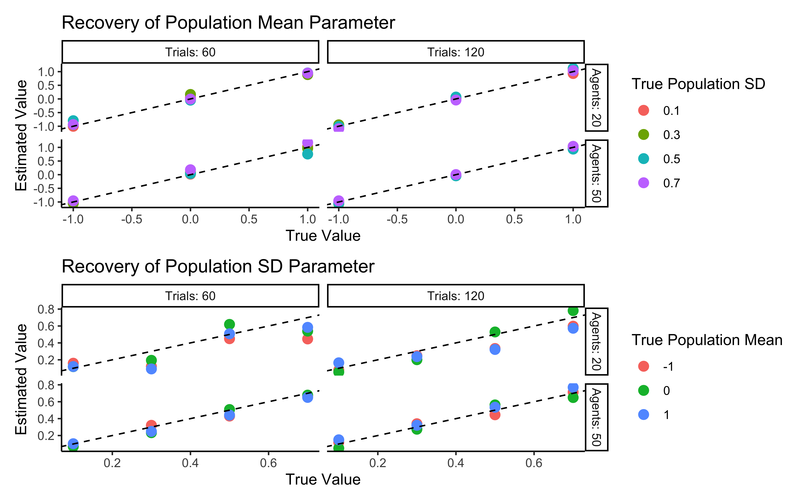
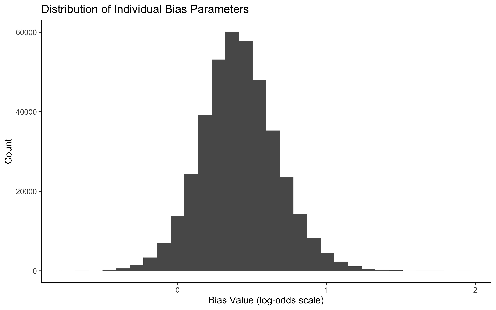

Chapter 7 Individual Differences in Cognitive Strategies (Multilevel modeling)
7.1 Introduction
Our exploration of decision-making models has so far focused on single agents or averaged behavior across many agents. However, cognitive science consistentlyreveals that individuals differ systematically in how they approach tasks and process information. Some people may be more risk-averse, have better memory, learn faster, or employ entirely different strategies than others. This chapter introduces multilevel modeling as a powerful framework for capturing these individual differences while still identifying population-level patterns.
Multilevel modeling (also called hierarchical modeling) provides a powerful framework for addressing this challenge. It allows us to simultaneously:
- Capture individual differences across participants
- Identify population-level patterns that generalize across individuals
- Improve estimates for individuals with limited data by leveraging information from the group
Consider our matching pennies game: different players might vary in their strategic sophistication, memory capacity, or learning rates. Some may show strong biases toward particular choices while others adapt more flexibly to their opponents. Multilevel modeling allows us to capture these variations while still understanding what patterns hold across the population.
Consider our matching pennies game: players might vary in their strategic sophistication, memory capacity, or learning rates. Some may show strong biases toward particular choices while others adapt more flexibly to their opponents. Multilevel modeling allows us to quantify these variations while still understanding what patterns hold across the population.
7.2 Learning Objectives
After completing this chapter, you will be able to:
Understand how multilevel modeling balances individual and group-level information
Distinguish between complete pooling, no pooling, and partial pooling approaches to modeling group and individual variation
Use different parameterizations to improve model efficiency
Evaluate model quality through systematic parameter recovery studies
Apply multilevel modeling techniques to cognitive science questions
7.3 The Value of Multilevel Modeling
Traditional approaches to handling individual differences often force a choice between two extremes:
7.3.1 Complete Pooling
Treats all participants as identical by averaging or combining their data
Estimates a single set of parameters for the entire group
Ignores individual differences entirely
Example: Fitting a single model to all participants’ data combined
7.3.2 No Pooling
Analyzes each participant completely separately
Estimates separate parameters for each individual
Fails to leverage information shared across participants and can lead to unstable estimates
Example: Fitting separate models to each participant’s data
Multilevel modeling offers a middle ground through partial pooling. Individual estimates are informed by both individual-level data and the overall population distribution.
7.3.3 Partial Pooling (Multilevel Modeling)
Individual parameters are treated as coming from a group-level distribution
Estimates are informed by both individual data and the population distribution
Creates a balance between individual and group information
Example: Hierarchical Bayesian model with parameters at both individual and group levels
This partial pooling approach is particularly valuable when:
Data per individual is limited (e.g., few trials per participant)
Individual differences are meaningful but not completely independent
We want to make predictions about new individuals from the same population
7.4 Graphical Model Visualization
Before diving into code, let’s understand the structure of our multilevel models using graphical model notation. These diagrams help visualize how parameters relate to each other and to the observed data.
7.4.1 Biased Agent Model
In this model, each agent has an individual bias parameter (θ) that determines their probability of choosing “right†(1) versus “left†(0). We are now conceptualizing our agents as being part of (sampled from) a more general population. This general population is characterized by a population level average parameter value (e.g. a general bias of 0.8 as we all like right hands more) and a certain variation in the population (e.g. a standard deviation of 0.1, as we are all a bit different from each other). Each biased agent’s bias is then sampled from that distribution.
The key elements are:
Population parameters: μ_θ (mean bias) and σ_θ (standard deviation of bias)
Individual parameters: θ_i (bias for agent i)
Observed data: y_it (choice for agent i on trial t)
7.4.2 Memory Agent Model
This model is more complex, with each agent having two parameters: a baseline bias (α) and a memory sensitivity parameter (β).
The key elements are:
Population parameters: μ_α, σ_α, μ_β, σ_β (means and standard deviations)
Individual parameters: α_i (bias for agent i), β_i (memory sensitivity for agent i)
Transformed variables: m_it (memory state for agent i on trial t)
Observed data: y_it (choice for agent i on trial t)
These graphical models help us understand how information flows in our models and guide our implementation in Stan.
Again, it’s practical to work in log odds. Why? Well, it’s not unconceivable that an agent would be 3 sd from the mean. So a biased agent could have a rate of 0.8 + 3 * 0.1, which gives a rate of 1.1. It’s kinda impossible to choose 110% of the time the right hand. We want an easy way to avoid these situations without too carefully tweaking our parameters, or including exception statements (e.g. if rate > 1, then rate = 1). Conversion to log odds is again a wonderful way to work in a boundless space, and in the last step shrinking everything back to 0-1 probability space.
N.B. we model all agents with some added noise as we assume it cannot be eliminated from empirical studies.
pacman::p_load(tidyverse,
here,
posterior,
cmdstanr,
brms,
tidybayes,
patchwork,
bayesplot,
furrr,
LaplacesDemon)
# Population-level parameters
agents <- 100 # Number of agents to simulate
trials <- 120 # Number of trials per agent
noise <- 0 # Base noise level (probability of random choice)
# Biased agent population parameters
rateM <- 1.386 # Population mean of bias (log-odds scale, ~0.8 in probability)
rateSD <- 0.65 # Population SD of bias (log-odds scale, ~0.1 in probability)
# Memory agent population parameters
biasM <- 0 # Population mean of baseline bias (log-odds scale)
biasSD <- 0.1 # Population SD of baseline bias (log-odds scale)
betaM <- 1.5 # Population mean of memory sensitivity (log-odds scale)
betaSD <- 0.3 # Population SD of memory sensitivity (log-odds scale)
# For reference, convert log-odds parameters to probability scale
cat("Biased agent population mean (probability scale):",
round(plogis(rateM), 2), "\n")## Biased agent population mean (probability scale): 0.8## Approximate biased agent population SD (probability scale): 0.1# Random agent function: makes choices based on bias parameter
# Parameters:
# rate: log-odds of choosing option 1 ("right")
# noise: probability of making a random choice
# Returns: binary choice (0 or 1)
RandomAgentNoise_f <- function(rate, noise) {
# Generate choice based on agent's bias parameter (on log-odds scale)
choice <- rbinom(1, 1, plogis(rate))
# With probability 'noise', override choice with random 50/50 selection
if (rbinom(1, 1, noise) == 1) {
choice = rbinom(1, 1, 0.5)
}
return(choice)
}
# Memory agent function: makes choices based on opponent's historical choices
# Parameters:
# bias: baseline tendency to choose option 1 (log-odds scale)
# beta: sensitivity to memory (how strongly past choices affect decisions)
# otherRate: opponent's observed rate of choosing option 1 (probability scale)
# noise: probability of making a random choice
# Returns: binary choice (0 or 1)
MemoryAgentNoise_f <- function(bias, beta, otherRate, noise) {
# Calculate choice probability based on memory of opponent's choices
# Higher beta means agent responds more strongly to opponent's pattern
choice_prob <- inv_logit_scaled(bias + beta * logit_scaled(otherRate))
# Generate choice
choice <- rbinom(1, 1, choice_prob)
# With probability 'noise', override choice with random 50/50 selection
if (rbinom(1, 1, noise) == 1) {
choice = rbinom(1, 1, 0.5)
}
return(choice)
}7.5 Generating the agents
[MISSING: PARALLELIZE]
# Function to simulate one agent's behavior
simulate_agent <- function(agent_id, population_params, n_trials, noise_level) {
# Sample agent-specific parameters from population distributions
rate <- rnorm(1, population_params$rateM, population_params$rateSD)
bias <- rnorm(1, population_params$biasM, population_params$biasSD)
beta <- rnorm(1, population_params$betaM, population_params$betaSD)
# Initialize choice vectors
randomChoice <- rep(NA, n_trials)
memoryChoice <- rep(NA, n_trials)
# Generate choices for each trial
for (trial in 1:n_trials) {
# Random agent makes choice based on bias parameter
randomChoice[trial] <- RandomAgentNoise_f(rate, noise_level)
# Memory agent uses history of random agent's choices
if (trial == 1) {
# First trial: no history, so use 50/50 chance
memoryChoice[trial] <- rbinom(1, 1, 0.5)
} else {
# Later trials: use memory of previous random agent choices
memoryChoice[trial] <- MemoryAgentNoise_f(
bias,
beta,
mean(randomChoice[1:trial], na.rm = TRUE), # Current memory
noise_level
)
}
}
# Create tibble with all agent data
return(tibble(
agent = agent_id,
trial = seq(n_trials),
randomChoice,
trueRate = rate, # Store true parameter values for later validation
memoryChoice,
noise = noise_level,
rateM = population_params$rateM,
rateSD = population_params$rateSD,
bias = bias,
beta = beta,
biasM = population_params$biasM,
biasSD = population_params$biasSD,
betaM = population_params$betaM,
betaSD = population_params$betaSD
))
}
# Population parameters bundled in a list
population_params <- list(
rateM = rateM,
rateSD = rateSD,
biasM = biasM,
biasSD = biasSD,
betaM = betaM,
betaSD = betaSD
)
# Simulate all agents (in a real application, consider using purrr::map functions)
d <- NULL
for (agent_id in 1:agents) {
agent_data <- simulate_agent(agent_id, population_params, trials, noise)
if (agent_id == 1) {
d <- agent_data
} else {
d <- rbind(d, agent_data)
}
}
# Calculate running statistics for each agent
d <- d %>% group_by(agent) %>% mutate(
# Cumulative proportions of choices (shows learning/strategy over time)
randomRate = cumsum(randomChoice) / seq_along(randomChoice),
memoryRate = cumsum(memoryChoice) / seq_along(memoryChoice)
)
# Display information about the simulated dataset
cat("Generated data for", agents, "agents with", trials, "trials each\n")## Generated data for 100 agents with 120 trials each## Total observations: 12000## # A tibble: 5 × 16
## # Groups: agent [1]
## agent trial randomChoice trueRate memoryChoice noise rateM rateSD bias beta biasM biasSD
## <int> <int> <int> <dbl> <int> <dbl> <dbl> <dbl> <dbl> <dbl> <dbl> <dbl>
## 1 1 1 1 0.999 0 0 1.39 0.65 0.00321 1.34 0 0.1
## 2 1 2 1 0.999 1 0 1.39 0.65 0.00321 1.34 0 0.1
## 3 1 3 1 0.999 1 0 1.39 0.65 0.00321 1.34 0 0.1
## 4 1 4 0 0.999 1 0 1.39 0.65 0.00321 1.34 0 0.1
## 5 1 5 0 0.999 1 0 1.39 0.65 0.00321 1.34 0 0.1
## # ℹ 4 more variables: betaM <dbl>, betaSD <dbl>, randomRate <dbl>, memoryRate <dbl>7.6 Plotting the agents
# Create plot themes that we'll reuse
custom_theme <- theme_classic() +
theme(
legend.position = "top",
plot.title = element_text(hjust = 0.5),
plot.subtitle = element_text(hjust = 0.5, size = 9)
)
# Plot 1: Trajectories of randomRate for all agents
p1 <- ggplot(d, aes(x = trial, y = randomRate)) +
geom_line(aes(group = agent, color = "Individual Agents"), alpha = 0.25) + # Individual agents
geom_smooth(aes(color = "Average"), se = TRUE, size = 1.2) + # Group average
geom_hline(yintercept = 0.5, linetype = "dashed") +
ylim(0, 1) +
labs(
title = "Random Agent Behavior",
subtitle = "Cumulative proportion of 'right' choices over trials",
x = "Trial Number",
y = "Proportion of Right Choices",
color = NULL
) +
scale_color_manual(values = c("Individual Agents" = "gray50", "Average" = "blue")) +
custom_theme
# Plot 2: Trajectories of memoryRate for all agents
p2 <- ggplot(d, aes(x = trial, y = memoryRate)) +
geom_line(alpha = 0.15, aes(color = "Individual Agents", group = agent)) + # Individual agents
geom_smooth(aes(color = "Average"), se = TRUE, size = 1.2) + # Group average
geom_hline(yintercept = 0.5, linetype = "dashed") +
ylim(0, 1) +
labs(
title = "Memory Agent Behavior",
subtitle = "Cumulative proportion of 'right' choices over trials",
x = "Trial Number",
y = "Proportion of Right Choices",
color = NULL
) +
scale_color_manual(values = c("Individual Agents" = "gray50", "Average" = "darkred")) +
custom_theme
# Display plots side by side
p1 + p2
# Plot 3-5: Correlation between random and memory agent behavior at different timepoints
# These show how well memory agents track random agents' behavior over time
p3 <- d %>%
filter(trial == 10) %>%
ggplot(aes(randomRate, memoryRate)) +
geom_point(alpha = 0.6) +
geom_smooth(method = "lm", color = "blue") +
geom_abline(intercept = 0, slope = 1, color = "red", linetype = "dashed") +
coord_fixed(xlim = c(0, 1), ylim = c(0, 1)) +
labs(
title = "After 10 Trials",
x = "Random Agent Rate",
y = "Memory Agent Rate"
) +
custom_theme
p4 <- d %>%
filter(trial == 60) %>%
ggplot(aes(randomRate, memoryRate)) +
geom_point(alpha = 0.6) +
geom_smooth(method = "lm", color = "blue") +
geom_abline(intercept = 0, slope = 1, color = "red", linetype = "dashed") +
coord_fixed(xlim = c(0, 1), ylim = c(0, 1)) +
labs(
title = "After 60 Trials",
x = "Random Agent Rate",
y = "Memory Agent Rate"
) +
custom_theme
p5 <- d %>%
filter(trial == 120) %>%
ggplot(aes(randomRate, memoryRate)) +
geom_point(alpha = 0.6) +
geom_smooth(method = "lm", color = "blue") +
geom_abline(intercept = 0, slope = 1, color = "red", linetype = "dashed") +
coord_fixed(xlim = c(0, 1), ylim = c(0, 1)) +
labs(
title = "After 120 Trials",
x = "Random Agent Rate",
y = "Memory Agent Rate"
) +
custom_theme
# Display plots in a single row
p3 + p4 + p5 + plot_layout(guides = "collect") +
plot_annotation(
title = "Memory Agents' Adaptation to Random Agents Over Time",
subtitle = "Red line: perfect tracking; Blue line: actual relationship",
theme = theme(plot.title = element_text(hjust = 0.5),
plot.subtitle = element_text(hjust = 0.5))
)
# Plot 6-8: Correlation between true rate parameter and observed rate
# These show how well we can recover the underlying rate parameter
p6 <- d %>%
filter(trial == 10) %>%
ggplot(aes(inv_logit_scaled(trueRate), randomRate)) +
geom_point(alpha = 0.6) +
geom_smooth(method = "lm", color = "blue") +
geom_abline(intercept = 0, slope = 1, color = "red", linetype = "dashed") +
coord_fixed(xlim = c(0, 1), ylim = c(0, 1)) +
labs(
title = "After 10 Trials",
x = "True Rate Parameter",
y = "Observed Rate"
) +
custom_theme
p7 <- d %>%
filter(trial == 60) %>%
ggplot(aes(inv_logit_scaled(trueRate), randomRate)) +
geom_point(alpha = 0.6) +
geom_smooth(method = "lm", color = "blue") +
geom_abline(intercept = 0, slope = 1, color = "red", linetype = "dashed") +
coord_fixed(xlim = c(0, 1), ylim = c(0, 1)) +
labs(
title = "After 60 Trials",
x = "True Rate Parameter",
y = "Observed Rate"
) +
custom_theme
p8 <- d %>%
filter(trial == 120) %>%
ggplot(aes(inv_logit_scaled(trueRate), randomRate)) +
geom_point(alpha = 0.6) +
geom_smooth(method = "lm", color = "blue") +
geom_abline(intercept = 0, slope = 1, color = "red", linetype = "dashed") +
coord_fixed(xlim = c(0, 1), ylim = c(0, 1)) +
labs(
title = "After 120 Trials",
x = "True Rate Parameter",
y = "Observed Rate"
) +
custom_theme
# Display plots in a single row
p6 + p7 + p8 + plot_layout(guides = "collect") +
plot_annotation(
title = "Parameter Recovery: True vs. Observed Rates Over Time",
subtitle = "Red line: perfect recovery; Blue line: actual relationship",
theme = theme(plot.title = element_text(hjust = 0.5),
plot.subtitle = element_text(hjust = 0.5))
)
Note that as the n of trials increases, the memory model matches the random model better and better
7.7 Coding the multilevel agents
7.7.1 Multilevel random
Remember that the simulated parameters are: * biasM <- 0 * biasSD <- 0.1 * betaM <- 1.5 * betaSD <- 0.3
Prep the data
# For multilevel models, we need to reshape our data into matrices
# where rows are trials and columns are agents
# Function to create matrices from our long-format data
create_stan_data <- function(data, agent_type) {
# Select relevant choice column based on agent type
choice_col <- ifelse(agent_type == "random", "randomChoice", "memoryChoice")
other_col <- ifelse(agent_type == "random", "memoryChoice", "randomChoice")
# Create choice matrix
choice_data <- data %>%
dplyr::select(agent, trial, all_of(choice_col)) %>%
pivot_wider(
names_from = agent,
values_from = all_of(choice_col),
names_prefix = "agent_"
) %>%
dplyr::select(-trial) %>%
as.matrix()
# Create other-choice matrix (used for memory agent)
other_data <- data %>%
dplyr::select(agent, trial, all_of(other_col)) %>%
pivot_wider(
names_from = agent,
values_from = all_of(other_col),
names_prefix = "agent_"
) %>%
dplyr::select(-trial) %>%
as.matrix()
# Return data as a list ready for Stan
return(list(
trials = trials,
agents = agents,
h = choice_data,
other = other_data
))
}
# Create data for random agent model
data_random <- create_stan_data(d, "random")
# Create data for memory agent model
data_memory <- create_stan_data(d, "memory")
# Display dimensions of our data matrices
cat("Random agent matrix dimensions:", dim(data_random$h), "\n")## Random agent matrix dimensions: 120 100## Memory agent matrix dimensions: 120 1007.8 Multilevel Random Agent Model
Our first multilevel model focuses on the biased random agent. For each agent, we’ll estimate an individual bias parameter (theta) that determines their probability of choosing “right†versus “leftâ€. These individual parameters will be modeled as coming from a population distribution with mean thetaM and standard deviation thetaSD.
This approach balances two sources of information: 1. The agent’s individual choice patterns 2. The overall population distribution of bias parameters
The model implements the following hierarchical structure:
Population level: θᵠ~ Normal(0, 1), θˢᵈ ~ Normal⁺(0, 0.3)
Individual level: θᵢ ~ Normal(θᵐ, θˢᵈ)
Data level: yᵢₜ ~ Bernoulli(logit⁻¹(θᵢ))
Let’s implement this in Stan:
# Stan model for multilevel random agent
stan_model <- "
/* Multilevel Bernoulli Model
* This model infers agent-specific choice biases from sequences of binary choices (0/1)
* The model assumes each agent has their own bias (theta) drawn from a population distribution
*/
functions {
// Generate random numbers from truncated normal distribution
real normal_lb_rng(real mu, real sigma, real lb) {
real p = normal_cdf(lb | mu, sigma); // cdf for bounds
real u = uniform_rng(p, 1);
return (sigma * inv_Phi(u)) + mu; // inverse cdf for value
}
}
data {
int<lower=1> trials; // Number of trials per agent
int<lower=1> agents; // Number of agents
array[trials, agents] int<lower=0, upper=1> h; // Choice data: 0 or 1 for each trial/agent
}
parameters {
real thetaM; // Population-level mean bias (log-odds scale)
real<lower=0> thetaSD; // Population-level SD of bias
array[agents] real theta; // Agent-specific biases (log-odds scale)
}
model {
// Population-level priors
target += normal_lpdf(thetaM | 0, 1); // Prior for population mean
target += normal_lpdf(thetaSD | 0, 0.3) // Half-normal prior for population SD
- normal_lccdf(0 | 0, 0.3); // Adjustment for truncation at 0
// Agent-level model
target += normal_lpdf(theta | thetaM, thetaSD); // Agent biases drawn from population
// Likelihood for observed choices
for (i in 1:agents) {
target += bernoulli_logit_lpmf(h[,i] | theta[i]); // Choice likelihood
}
}
generated quantities {
// Prior predictive samples
real thetaM_prior = normal_rng(0, 1);
real<lower=0> thetaSD_prior = normal_lb_rng(0, 0.3, 0);
real<lower=0, upper=1> theta_prior = inv_logit(normal_rng(thetaM_prior, thetaSD_prior));
// Posterior predictive samples
real<lower=0, upper=1> theta_posterior = inv_logit(normal_rng(thetaM, thetaSD));
// Predictive simulations
int<lower=0, upper=trials> prior_preds = binomial_rng(trials, inv_logit(thetaM_prior));
int<lower=0, upper=trials> posterior_preds = binomial_rng(trials, inv_logit(thetaM));
// Convert parameters to probability scale for easier interpretation
real<lower=0, upper=1> thetaM_prob = inv_logit(thetaM);
}
"
write_stan_file(
stan_model,
dir = "stan/",
basename = "W6_MultilevelBias.stan")## [1] "/Users/au209589/Dropbox/Teaching/AdvancedCognitiveModeling23_book/stan/W6_MultilevelBias.stan"# File path for saved model
model_file <- "simmodels/W6_MultilevelBias.RDS"
# Check if we need to rerun the simulation
if (regenerate_simulations || !file.exists(model_file)) {
file <- file.path("stan/W6_MultilevelBias.stan")
mod <- cmdstan_model(file,
cpp_options = list(stan_threads = TRUE),
stanc_options = list("O1"))
# Check if we need to rerun the simulation
samples <- mod$sample(
data = data_random,
seed = 123,
chains = 2,
parallel_chains = 2,
threads_per_chain = 2,
iter_warmup = 2000,
iter_sampling = 2000,
refresh = 500,
max_treedepth = 20,
adapt_delta = 0.99,
)
samples$save_object(file = model_file)
cat("Generated new model fit and saved to", model_file, "\n")
} else {
# Load existing results
samples <- readRDS(model_file)
cat("Loaded existing model fit from", model_file, "\n")
}## Loaded existing model fit from simmodels/W6_MultilevelBias.RDS7.8.1 Assessing multilevel random agents
Besides the usual prior predictive checks, prior posterior update checks, posterior predictive checks, based on the population level estimates; we also want to plot at least a few of the single agents to assess how well the model is doing for them.
[MISSING: PLOT MODEL ESTIMATES AGAINST N OF HEADS BY PARTICIPANT]
# Load the model results
samples <- readRDS("simmodels/W6_MultilevelBias.RDS")
# Display summary statistics for key parameters
samples$summary(c("thetaM", "thetaSD", "thetaM_prob")) ## # A tibble: 3 × 10
## variable mean median sd mad q5 q95 rhat ess_bulk ess_tail
## <chr> <dbl> <dbl> <dbl> <dbl> <dbl> <dbl> <dbl> <dbl> <dbl>
## 1 thetaM 1.35 1.35 0.0677 0.0673 1.24 1.46 1.00 5172. 3042.
## 2 thetaSD 0.638 0.635 0.0516 0.0510 0.559 0.727 1.00 3636. 2796.
## 3 thetaM_prob 0.793 0.794 0.0111 0.0110 0.775 0.811 1.00 5172. 3042.# Extract posterior draws for analysis
draws_df <- as_draws_df(samples$draws())
# Create a function for standard diagnostic plots
plot_diagnostics <- function(parameter_name, true_value = NULL,
prior_name = paste0(parameter_name, "_prior")) {
# Trace plot to check mixing and convergence
p1 <- ggplot(draws_df, aes(.iteration, .data[[parameter_name]],
group = .chain, color = as.factor(.chain))) +
geom_line(alpha = 0.5) +
labs(title = paste("Trace Plot for", parameter_name),
x = "Iteration", y = parameter_name, color = "Chain") +
theme_classic()
# Prior-posterior update plot
p2 <- ggplot(draws_df) +
geom_histogram(aes(.data[[parameter_name]]), fill = "blue", alpha = 0.3) +
geom_histogram(aes(.data[[prior_name]]), fill = "red", alpha = 0.3)
# Add true value if provided
if (!is.null(true_value)) {
p2 <- p2 + geom_vline(xintercept = true_value, linetype = "dashed", size = 1)
}
p2 <- p2 +
labs(title = paste("Prior-Posterior Update for", parameter_name),
subtitle = "Blue: posterior, Red: prior, Dashed: true value",
x = parameter_name, y = "Density") +
theme_classic()
# Return both plots
return(p1 + p2)
}
# Plot diagnostics for population mean
pop_mean_plots <- plot_diagnostics("thetaM", rateM)
# Plot diagnostics for population SD
pop_sd_plots <- plot_diagnostics("thetaSD", rateSD)
# Display diagnostic plots
pop_mean_plots

# Create predictive check plots
# Prior predictive check
p1 <- ggplot(draws_df) +
geom_histogram(aes(prior_preds),
bins = 30, fill = "blue", alpha = 0.3,
color = "darkblue") +
labs(title = "Prior Predictive Check",
subtitle = "Distribution of predicted 'right' choices out of 120 trials",
x = "Number of Right Choices", y = "Count") +
theme_classic()
# Posterior predictive check
p2 <- ggplot(draws_df) +
geom_histogram(aes(posterior_preds),
bins = 30, fill = "green", alpha = 0.3,
color = "darkgreen") +
geom_histogram(aes(prior_preds),
bins = 30, fill = "blue", alpha = 0.1,
color = "darkblue") +
labs(title = "Prior vs Posterior Predictive Check",
subtitle = "Green: posterior predictions, Blue: prior predictions",
x = "Number of Right Choices", y = "Count") +
theme_classic()
# Average observed choices per agent
agent_means <- colMeans(data_random$h)
observed_counts <- agent_means * trials
# Add observed counts to posterior predictive plot
p3 <- ggplot(draws_df) +
geom_histogram(aes(posterior_preds),
bins = 30, fill = "green", alpha = 0.3,
color = "darkgreen") +
geom_histogram(data = tibble(observed = observed_counts),
aes(observed), bins = 30, fill = "red", alpha = 0.3,
color = "darkred") +
labs(title = "Posterior Predictions vs Observed Data",
subtitle = "Green: posterior predictions, Red: actual observed counts",
x = "Number of Right Choices", y = "Count") +
theme_classic()
# Display predictive check plots
p1 + p2 + p3
7.9 Let’s look at individuals
# Extract individual parameter estimates
# Sample 10 random agents to examine more closely
sample_agents <- sample(1:agents, 10)
# Extract posterior samples for each agent's theta parameter
theta_samples <- matrix(NA, nrow = nrow(draws_df), ncol = agents)
for (a in 1:agents) {
# Convert from log-odds to probability scale for ease of interpretation
theta_samples[, a] <- inv_logit_scaled(draws_df[[paste0("theta[", a, "]")]])
}
# Calculate true rates
dddd <- unique(d[,c("agent", "trueRate")]) %>%
mutate(trueRate = inv_logit_scaled(trueRate))
# Create a dataframe with the true rates and empirical rates
agent_comparison <- tibble(
agent = 1:agents,
true_rate = dddd$trueRate, # True rate used in simulation
empirical_rate = colMeans(data_random$h) # Observed proportion of right choices
)
# Calculate summary statistics for posterior estimates
theta_summaries <- tibble(
agent = 1:agents,
mean = colMeans(theta_samples),
lower_95 = apply(theta_samples, 2, quantile, 0.025),
upper_95 = apply(theta_samples, 2, quantile, 0.975)
) %>%
# Join with true values for comparison
left_join(agent_comparison, by = "agent") %>%
# Calculate error metrics
mutate(
abs_error = abs(mean - true_rate),
in_interval = true_rate >= lower_95 & true_rate <= upper_95,
rel_error = abs_error / true_rate
)
# Plot 1: Posterior distributions for sample agents
posterior_samples <- tibble(
agent = rep(sample_agents, each = nrow(draws_df)),
sample_idx = rep(1:nrow(draws_df), times = length(sample_agents)),
estimated_rate = as.vector(theta_samples[, sample_agents])
)
p1 <- ggplot() +
# Add density plot for posterior distribution of rates
geom_density(data = posterior_samples,
aes(x = estimated_rate, group = agent),
fill = "skyblue", alpha = 0.5) +
# Add vertical line for true rate
geom_vline(data = agent_comparison %>% filter(agent %in% sample_agents),
aes(xintercept = true_rate),
color = "red", size = 1) +
# Add vertical line for empirical rate
geom_vline(data = agent_comparison %>% filter(agent %in% sample_agents),
aes(xintercept = empirical_rate),
color = "green4", size = 1, linetype = "dashed") +
# Facet by agent
facet_wrap(~agent, scales = "free_y") +
# Add formatting
labs(title = "Individual Agent Parameter Estimation",
subtitle = "Blue density: Posterior distribution\nRed line: True rate\nGreen dashed line: Empirical rate",
x = "Rate Parameter (Probability Scale)",
y = "Density") +
theme_classic() +
theme(strip.background = element_rect(fill = "white"),
strip.text = element_text(face = "bold")) +
xlim(0, 1)
# Plot 2: Parameter recovery for all agents
p2 <- ggplot(theta_summaries, aes(x = true_rate, y = mean)) +
geom_point(aes(color = in_interval), size = 3, alpha = 0.7) +
geom_errorbar(aes(ymin = lower_95, ymax = upper_95, color = in_interval),
width = 0.01, alpha = 0.3) +
geom_abline(intercept = 0, slope = 1, linetype = "dashed", color = "black") +
geom_smooth(method = "lm", color = "blue", se = FALSE, linetype = "dotted") +
scale_color_manual(values = c("TRUE" = "darkgreen", "FALSE" = "red")) +
labs(title = "Parameter Recovery Performance",
subtitle = "Each point represents one agent; error bars show 95% credible intervals",
x = "True Rate",
y = "Estimated Rate",
color = "True Value in\n95% Interval") +
theme_classic() +
xlim(0, 1) + ylim(0, 1)
# Calculate parameter estimation metrics
error_metrics <- tibble(
agent = 1:agents,
true_rate = dddd$trueRate,
empirical_rate = colMeans(data_random$h),
estimated_rate = colMeans(theta_samples),
lower_95 = apply(theta_samples, 2, quantile, 0.025),
upper_95 = apply(theta_samples, 2, quantile, 0.975),
absolute_error = abs(estimated_rate - true_rate),
relative_error = absolute_error / true_rate,
in_interval = true_rate >= lower_95 & true_rate <= upper_95
)
# Create direct comparison plot
p3 <- ggplot(error_metrics, aes(x = agent)) +
geom_errorbar(aes(ymin = lower_95, ymax = upper_95), width = 0.2, color = "blue", alpha = 0.5) +
geom_point(aes(y = estimated_rate), color = "blue", size = 3) +
geom_point(aes(y = true_rate), color = "red", shape = 4, size = 3, stroke = 2, alpha = 0.3) +
geom_point(aes(y = empirical_rate), color = "green4", shape = 1, size = 3, stroke = 2, alpha = 0.3) +
labs(title = "Parameter Estimation Accuracy by Agent",
subtitle = "Blue points and bars: Estimated rate with 95% credible interval\nRed X: True rate used in simulation\nGreen circle: Empirical rate from observed data",
x = "Agent ID",
y = "Rate") +
theme_classic()
# Plot 4: Shrinkage visualization
# Calculate population mean estimate
pop_mean <- mean(draws_df$thetaM_prob)
# Add shrinkage information to the data
shrinkage_data <- theta_summaries %>%
mutate(
# Distance from empirical to population mean (shows shrinkage direction)
empirical_to_pop = empirical_rate - pop_mean,
# Distance from estimate to empirical (shows amount of shrinkage)
estimate_to_empirical = mean - empirical_rate,
# Ratio of distances (shrinkage proportion)
shrinkage_ratio = 1 - (abs(mean - pop_mean) / abs(empirical_rate - pop_mean)),
# Define number of trials for sizing points
n_trials = trials
)
p4 <- ggplot(shrinkage_data, aes(x = empirical_rate, y = mean)) +
# Reference line for no shrinkage
geom_abline(intercept = 0, slope = 1, linetype = "dashed", color = "gray50") +
# Horizontal line for population mean
geom_hline(yintercept = pop_mean, linetype = "dotted", color = "blue") +
# Points for each agent
geom_point(aes(size = n_trials, color = abs(shrinkage_ratio)), alpha = 0.7) +
# Connect points to their empirical values to show shrinkage
geom_segment(aes(xend = empirical_rate, yend = empirical_rate,
color = abs(shrinkage_ratio)), alpha = 0.3) +
scale_color_gradient(low = "yellow", high = "red") +
labs(title = "Shrinkage Effects in Multilevel Modeling",
subtitle = "Points above diagonal shrink down, points below shrink up;\nBlue dotted line: population mean estimate",
x = "Empirical Rate (Observed Proportion)",
y = "Posterior Mean Estimate",
color = "Shrinkage\nMagnitude",
size = "Number of\nTrials") +
theme_classic() +
xlim(0, 1) + ylim(0, 1)
# Display plots
p1


7.10 Prior sensitivity checks
# File path for saved sensitivity results
sensitivity_results_file <- "simdata/W6_sensitivity_results.csv"
# Check if we need to rerun the analysis
if (regenerate_simulations || !file.exists(sensitivity_results_file)) {
# Define a range of prior specifications to test
prior_settings <- expand_grid(
prior_mean_theta = c(-1, 0, 1), # Different prior means for population rate
prior_sd_theta = c(0.5, 1, 2), # Different prior SDs for population rate
prior_scale_theta_sd = c(0.1, 0.3, 0.5, 1) # Different scales for the SD hyperprior
)
# First, create a single Stan model that accepts prior hyperparameters as data
stan_code <- "
functions {
real normal_lb_rng(real mu, real sigma, real lb) {
real p = normal_cdf(lb | mu, sigma);
real u = uniform_rng(p, 1);
return (sigma * inv_Phi(u)) + mu;
}
}
data {
int<lower=1> trials;
int<lower=1> agents;
array[trials, agents] int<lower=0, upper=1> h;
real prior_mean_theta;
real<lower=0> prior_sd_theta;
real<lower=0> prior_scale_theta_sd;
}
parameters {
real thetaM;
real<lower=0> thetaSD;
array[agents] real theta;
}
model {
// Population-level priors with specified hyperparameters
target += normal_lpdf(thetaM | prior_mean_theta, prior_sd_theta);
target += normal_lpdf(thetaSD | 0, prior_scale_theta_sd) - normal_lccdf(0 | 0, prior_scale_theta_sd);
// Agent-level model
target += normal_lpdf(theta | thetaM, thetaSD);
// Likelihood
for (i in 1:agents) {
target += bernoulli_logit_lpmf(h[,i] | theta[i]);
}
}
generated quantities {
real thetaM_prob = inv_logit(thetaM);
}
"
# Write model to file
writeLines(stan_code, "stan/sensitivity_model.stan")
# Compile the model once
mod_sensitivity <- cmdstan_model("stan/sensitivity_model.stan",
cpp_options = list(stan_threads = TRUE),
stanc_options = list("O1"))
# Function to fit model with specified priors
fit_with_priors <- function(prior_mean_theta, prior_sd_theta, prior_scale_theta_sd) {
# Create data with prior specifications
data_with_priors <- c(data_random, list(
prior_mean_theta = prior_mean_theta,
prior_sd_theta = prior_sd_theta,
prior_scale_theta_sd = prior_scale_theta_sd
))
# Fit model
fit <- mod_sensitivity$sample(
data = data_with_priors,
seed = 123,
chains = 1,
parallel_chains = 1,
threads_per_chain = 1,
iter_warmup = 1000,
iter_sampling = 1000,
refresh = 0
)
# Extract posterior summaries
summary_df <- fit$summary(c("thetaM", "thetaSD", "thetaM_prob"))
# Return results
return(tibble(
prior_mean_theta = prior_mean_theta,
prior_sd_theta = prior_sd_theta,
prior_scale_theta_sd = prior_scale_theta_sd,
est_thetaM = summary_df$mean[summary_df$variable == "thetaM"],
est_thetaSD = summary_df$mean[summary_df$variable == "thetaSD"],
est_thetaM_prob = summary_df$mean[summary_df$variable == "thetaM_prob"]
))
}
# Run parallel analysis
library(furrr)
plan(multisession, workers = 4) # Using fewer workers to reduce resource use
sensitivity_results <- future_pmap_dfr(
prior_settings,
function(prior_mean_theta, prior_sd_theta, prior_scale_theta_sd) {
fit_with_priors(prior_mean_theta, prior_sd_theta, prior_scale_theta_sd)
},
.options = furrr_options(seed = TRUE)
)
# Save results for future use
write_csv(sensitivity_results, sensitivity_results_file)
cat("Generated new sensitivity analysis results and saved to", sensitivity_results_file, "\n")
} else {
# Load existing results
sensitivity_results <- read_csv(sensitivity_results_file)
cat("Loaded existing sensitivity analysis results from", sensitivity_results_file, "\n")
}## Loaded existing sensitivity analysis results from simdata/W6_sensitivity_results.csv# Plot for population mean estimate
p1 <- ggplot(sensitivity_results,
aes(x = prior_mean_theta,
y = est_thetaM_prob,
color = factor(prior_scale_theta_sd))) +
geom_point(size = 3) +
geom_hline(yintercept = inv_logit_scaled(d$rateM), linetype = "dashed") +
labs(title = "Sensitivity of Population Mean Parameter",
subtitle = "Dashed line shows average empirical rate across participants",
x = "Prior Mean, SD for Population Parameter",
y = "Estimated Population Mean (probability scale)",
color = "Prior Scale for\nPopulation SD") +
theme_classic() +
ylim(0.7, 0.9) +
facet_wrap(.~prior_sd_theta) +
theme(axis.text.x = element_text(angle = 45, hjust = 1))
# Plot for population SD parameter
p2 <- ggplot(sensitivity_results,
aes(x = prior_mean_theta,
y = est_thetaSD,
color = factor(prior_scale_theta_sd))) +
geom_point(size = 3) +
geom_hline(yintercept = d$rateSD, linetype = "dashed") +
labs(title = "Sensitivity of Population Variance Parameter",
x = "Prior Mean, SD for Population Parameter",
y = "Estimated Population SD",
color = "Prior Scale for\nPopulation SD") +
theme_classic() +
ylim(0.5, 0.7) +
facet_wrap(.~prior_sd_theta) +
theme(axis.text.x = element_text(angle = 45, hjust = 1))
# Display plots
p1 / p2
7.11 Parameter recovery
# File path for saved recovery results
recovery_results_file <- "simdata/W6_recovery_results.csv"
# Check if we need to rerun the analysis
if (regenerate_simulations || !file.exists(recovery_results_file)) {
# Function to simulate data and recover parameters
recover_parameters <- function(true_thetaM, true_thetaSD, n_agents, n_trials) {
# Generate agent-specific true rates
agent_thetas <- rnorm(n_agents, true_thetaM, true_thetaSD)
# Generate choice data
sim_data <- matrix(NA, nrow = n_trials, ncol = n_agents)
for (a in 1:n_agents) {
sim_data[,a] <- rbinom(n_trials, 1, inv_logit_scaled(agent_thetas[a]))
}
# Prepare data for Stan
stan_data <- list(
trials = n_trials,
agents = n_agents,
h = sim_data,
prior_mean_theta = 0, # Using neutral priors
prior_sd_theta = 1,
prior_scale_theta_sd = 0.3
)
# Compile the model once
mod_sensitivity <- cmdstan_model("stan/sensitivity_model.stan",
cpp_options = list(stan_threads = TRUE),
stanc_options = list("O1"))
# Fit model
fit <- mod_sensitivity$sample(
data = stan_data,
seed = 123,
chains = 1,
parallel_chains = 1,
threads_per_chain = 1,
iter_warmup = 1000,
iter_sampling = 1000,
refresh = 0
)
# Extract estimates
summary_df <- fit$summary(c("thetaM", "thetaSD"))
# Return comparison of true vs. estimated parameters
return(tibble(
true_thetaM = true_thetaM,
true_thetaSD = true_thetaSD,
n_agents = n_agents,
n_trials = n_trials,
est_thetaM = summary_df$mean[summary_df$variable == "thetaM"],
est_thetaSD = summary_df$mean[summary_df$variable == "thetaSD"]
))
}
# Create parameter grid for recovery study
recovery_settings <- expand_grid(
true_thetaM = c(-1, 0, 1),
true_thetaSD = c(0.1, 0.3, 0.5, 0.7),
n_agents = c(20, 50),
n_trials = c(60, 120)
)
# Run parameter recovery study (this can be very time-consuming)
recovery_results <- pmap_dfr(
recovery_settings,
function(true_thetaM, true_thetaSD, n_agents, n_trials) {
recover_parameters(true_thetaM, true_thetaSD, n_agents, n_trials)
}
)
# Save results for future use
write_csv(recovery_results, recovery_results_file)
cat("Generated new parameter recovery results and saved to", recovery_results_file, "\n")
} else {
# Load existing results
recovery_results <- read_csv(recovery_results_file)
cat("Loaded existing parameter recovery results from", recovery_results_file, "\n")
}## Loaded existing parameter recovery results from simdata/W6_recovery_results.csv# Visualize parameter recovery results
p1 <- ggplot(recovery_results,
aes(x = true_thetaM, y = est_thetaM,
color = factor(true_thetaSD))) +
geom_point(size = 3) +
geom_abline(intercept = 0, slope = 1, linetype = "dashed") +
facet_grid(n_agents ~ n_trials,
labeller = labeller(
n_agents = function(x) paste0("Agents: ", x),
n_trials = function(x) paste0("Trials: ", x)
)) +
labs(title = "Recovery of Population Mean Parameter",
x = "True Value",
y = "Estimated Value",
color = "True Population SD") +
theme_classic()
p2 <- ggplot(recovery_results,
aes(x = true_thetaSD, y = est_thetaSD,
color = factor(true_thetaM))) +
geom_point(size = 3) +
geom_abline(intercept = 0, slope = 1, linetype = "dashed") +
facet_grid(n_agents ~ n_trials,
labeller = labeller(
n_agents = function(x) paste0("Agents: ", x),
n_trials = function(x) paste0("Trials: ", x)
)) +
labs(title = "Recovery of Population SD Parameter",
x = "True Value",
y = "Estimated Value",
color = "True Population Mean") +
theme_classic()
# Display parameter recovery plots
p1 / p2
7.12 Multilevel Memory Agent Model
Now we’ll implement a more complex model for the memory agent. This model has two parameters per agent:
bias: baseline tendency to choose “right†(log-odds scale)beta: sensitivity to the memory of opponent’s past choices
Like the random agent model, we’ll use a multilevel structure where individual parameters come from population distributions. However, this model presents some additional challenges:
- We need to handle two parameters per agent
- We need to track and update memory states during the model
- The hierarchical structure is more complex
The hierarchical structure for this model is:
Population level:
μ_bias ~ Normal(0, 1), σ_bias ~ Normal⁺(0, 0.3)
μ_beta ~ Normal(0, 0.3), σ_beta ~ Normal⁺(0, 0.3)
Individual level:
bias_i ~ Normal(μ_bias, σ_bias)
beta_i ~ Normal(μ_beta, σ_beta)
Transformed variables:
- memory_it = updated based on opponent’s choices
Data level:
- y_it ~ Bernoulli(logit⁻¹(bias_i + beta_i * logit(memory_it)))
Let’s implement this model.
[MISSING: DAGS]
Code, compile and fit the model
# Stan model for multilevel memory agent with centered parameterization
stan_model <- "
// Multilevel Memory Agent Model (Centered Parameterization)
//
functions{
real normal_lb_rng(real mu, real sigma, real lb) {
real p = normal_cdf(lb | mu, sigma); // cdf for bounds
real u = uniform_rng(p, 1);
return (sigma * inv_Phi(u)) + mu; // inverse cdf for value
}
}
// The input data for the model
data {
int<lower = 1> trials; // Number of trials per agent
int<lower = 1> agents; // Number of agents
array[trials, agents] int h; // Memory agent choices
array[trials, agents] int other; // Opponent (random agent) choices
}
// Parameters to be estimated
parameters {
// Population-level parameters
real biasM; // Mean of baseline bias
real<lower = 0> biasSD; // SD of baseline bias
real betaM; // Mean of memory sensitivity
real<lower = 0> betaSD; // SD of memory sensitivity
// Individual-level parameters
array[agents] real bias; // Individual baseline bias parameters
array[agents] real beta; // Individual memory sensitivity parameters
}
// Transformed parameters (derived quantities)
transformed parameters {
// Memory state for each agent and trial
array[trials, agents] real memory;
// Calculate memory states based on opponent's choices
for (agent in 1:agents){
// Initial memory state (no prior information)
memory[1, agent] = 0.5;
for (trial in 1:trials){
// Update memory based on opponent's choices
if (trial < trials){
// Simple averaging memory update
memory[trial + 1, agent] = memory[trial, agent] +
((other[trial, agent] - memory[trial, agent]) / trial);
// Handle edge cases to avoid numerical issues
if (memory[trial + 1, agent] == 0){memory[trial + 1, agent] = 0.01;}
if (memory[trial + 1, agent] == 1){memory[trial + 1, agent] = 0.99;}
}
}
}
}
// Model definition
model {
// Population-level priors
target += normal_lpdf(biasM | 0, 1);
target += normal_lpdf(biasSD | 0, .3) - normal_lccdf(0 | 0, .3); // Half-normal
target += normal_lpdf(betaM | 0, .3);
target += normal_lpdf(betaSD | 0, .3) - normal_lccdf(0 | 0, .3); // Half-normal
// Individual-level priors
target += normal_lpdf(bias | biasM, biasSD);
target += normal_lpdf(beta | betaM, betaSD);
// Likelihood
for (agent in 1:agents) {
for (trial in 1:trials) {
target += bernoulli_logit_lpmf(h[trial,agent] |
bias[agent] + logit(memory[trial, agent]) * beta[agent]);
}
}
}
// Generated quantities for model checking and predictions
generated quantities{
// Prior samples for checking
real biasM_prior;
real<lower=0> biasSD_prior;
real betaM_prior;
real<lower=0> betaSD_prior;
real bias_prior;
real beta_prior;
// Predictive simulations with different memory values
int<lower=0, upper = trials> prior_preds0; // No memory effect (memory=0)
int<lower=0, upper = trials> prior_preds1; // Neutral memory (memory=0.5)
int<lower=0, upper = trials> prior_preds2; // Strong memory (memory=1)
int<lower=0, upper = trials> posterior_preds0;
int<lower=0, upper = trials> posterior_preds1;
int<lower=0, upper = trials> posterior_preds2;
// Individual-level predictions (for each agent)
array[agents] int<lower=0, upper = trials> posterior_predsID0;
array[agents] int<lower=0, upper = trials> posterior_predsID1;
array[agents] int<lower=0, upper = trials> posterior_predsID2;
// Generate prior samples
biasM_prior = normal_rng(0,1);
biasSD_prior = normal_lb_rng(0,0.3,0);
betaM_prior = normal_rng(0,1);
betaSD_prior = normal_lb_rng(0,0.3,0);
bias_prior = normal_rng(biasM_prior, biasSD_prior);
beta_prior = normal_rng(betaM_prior, betaSD_prior);
// Prior predictive checks with different memory values
prior_preds0 = binomial_rng(trials, inv_logit(bias_prior + 0 * beta_prior));
prior_preds1 = binomial_rng(trials, inv_logit(bias_prior + 1 * beta_prior));
prior_preds2 = binomial_rng(trials, inv_logit(bias_prior + 2 * beta_prior));
// Posterior predictive checks with different memory values
posterior_preds0 = binomial_rng(trials, inv_logit(biasM + 0 * betaM));
posterior_preds1 = binomial_rng(trials, inv_logit(biasM + 1 * betaM));
posterior_preds2 = binomial_rng(trials, inv_logit(biasM + 2 * betaM));
// Individual-level predictions
for (agent in 1:agents){
posterior_predsID0[agent] = binomial_rng(trials,
inv_logit(bias[agent] + 0 * beta[agent]));
posterior_predsID1[agent] = binomial_rng(trials,
inv_logit(bias[agent] + 1 * beta[agent]));
posterior_predsID2[agent] = binomial_rng(trials,
inv_logit(bias[agent] + 2 * beta[agent]));
}
}
"
write_stan_file(
stan_model,
dir = "stan/",
basename = "W6_MultilevelMemory.stan")
# File path for saved model
model_file <- "simmodels/W6_MultilevelMemory_centered.RDS"
# Check if we need to rerun the simulation
if (regenerate_simulations || !file.exists(model_file)) {
file <- file.path("stan/W6_MultilevelMemory.stan")
mod <- cmdstan_model(file,
cpp_options = list(stan_threads = TRUE),
stanc_options = list("O1"))
# Sample from the posterior distribution
samples_mlvl <- mod$sample(
data = data_memory,
seed = 123,
chains = 2,
parallel_chains = 2,
threads_per_chain = 1,
iter_warmup = 2000,
iter_sampling = 2000,
refresh = 500,
max_treedepth = 20,
adapt_delta = 0.99
)
# Save the model results
samples_mlvl$save_object(file = model_file)
cat("Generated new model fit and saved to", model_file, "\n")
} else {
# Load existing results
samples_mlvl <- readRDS(model_file)
cat("Loaded existing model fit from", model_file, "\n")
}7.12.1 Assessing multilevel memory
# Check if samples_biased exists
if (!exists("samples_mlvl")) {
cat("Loading multilevel model samples...\n")
samples_mlvl <- readRDS("simmodels/W6_MultilevelMemory_centered.RDS")
cat("Available parameters:", paste(colnames(as_draws_df(samples_mlvl$draws())), collapse = ", "), "\n")
}
# Show summary statistics for key parameters
print(samples_mlvl$summary(c("biasM", "betaM", "biasSD", "betaSD")))## # A tibble: 4 × 10
## variable mean median sd mad q5 q95 rhat ess_bulk ess_tail
## <chr> <dbl> <dbl> <dbl> <dbl> <dbl> <dbl> <dbl> <dbl> <dbl>
## 1 biasM 0.416 0.414 0.0808 0.0800 0.285 0.552 1.01 241. 484.
## 2 betaM 1.16 1.16 0.0711 0.0727 1.04 1.27 1.00 347. 833.
## 3 biasSD 0.241 0.240 0.0611 0.0599 0.141 0.343 1.00 205. 242.
## 4 betaSD 0.381 0.379 0.0465 0.0457 0.308 0.461 1.00 1155. 1764.# Extract posterior draws for analysis
draws_df <- as_draws_df(samples_mlvl$draws())
# Create trace plots to check convergence
p1 <- mcmc_trace(draws_df, pars = c("biasM", "biasSD", "betaM", "betaSD")) +
theme_classic() +
ggtitle("Trace Plots for Population Parameters")
# Show trace plots
p1
# Create prior-posterior update plots
create_density_plot <- function(param, true_value, title) {
prior_name <- paste0(param, "_prior")
ggplot(draws_df) +
geom_histogram(aes(get(param)), fill = "blue", alpha = 0.3) +
geom_histogram(aes(get(prior_name)), fill = "red", alpha = 0.3) +
geom_vline(xintercept = true_value, linetype = "dashed") +
labs(title = title,
subtitle = "Blue: posterior, Red: prior, Dashed: true value",
x = param, y = "Density") +
theme_classic()
}
# Create individual plots
p_biasM <- create_density_plot("biasM", biasM, "Population Mean Bias")
p_biasSD <- create_density_plot("biasSD", biasSD, "Population SD of Bias")
p_betaM <- create_density_plot("betaM", betaM, "Population Mean Beta")
p_betaSD <- create_density_plot("betaSD", betaSD, "Population SD of Beta")
# Show them in a grid
(p_biasM + p_biasSD) / (p_betaM + p_betaSD)
# Show correlations
p1 <- ggplot(draws_df, aes(biasM, biasSD, group = .chain, color = .chain)) +
geom_point(alpha = 0.1) +
theme_classic()
p2 <- ggplot(draws_df, aes(betaM, betaSD, group = .chain, color = .chain)) +
geom_point(alpha = 0.1) +
theme_classic()
p3 <- ggplot(draws_df, aes(biasM, betaM, group = .chain, color = .chain)) +
geom_point(alpha = 0.1) +
theme_classic()
p4 <- ggplot(draws_df, aes(biasSD, betaSD, group = .chain, color = .chain)) +
geom_point(alpha = 0.1) +
theme_classic()
p1 + p2 + p3 + p4
# Create posterior predictive check plots
p1 <- ggplot(draws_df) +
geom_histogram(aes(prior_preds0), fill = "red", alpha = 0.3, bins = 30) +
geom_histogram(aes(posterior_preds0), fill = "blue", alpha = 0.3, bins = 30) +
geom_histogram(aes(posterior_preds1), fill = "green", alpha = 0.3, bins = 30) +
geom_histogram(aes(posterior_preds2), fill = "purple", alpha = 0.3, bins = 30) +
labs(title = "Prior and Posterior Predictive Distributions",
subtitle = "Red: prior, Blue: no memory effect, Green: neutral memory, Purple: strong memory",
x = "Predicted Right Choices (out of 120)",
y = "Count") +
theme_classic()
# Display plots
p1
# Individual-level parameter recovery
# Extract individual parameters for a sample of agents
sample_agents <- sample(1:agents, 100)
sample_data <- d %>%
filter(agent %in% sample_agents, trial == 1) %>%
dplyr::select(agent, bias, beta)
# Extract posterior means for individual agents
bias_means <- c()
beta_means <- c()
for (i in sample_agents) {
bias_means[i] <- mean(draws_df[[paste0("bias[", i, "]")]])
beta_means[i] <- mean(draws_df[[paste0("beta[", i, "]")]])
}
# Create comparison data
comparison_data <- tibble(
agent = sample_agents,
true_bias = sample_data$bias,
est_bias = bias_means[sample_agents],
true_beta = sample_data$beta,
est_beta = beta_means[sample_agents]
)
# Plot comparison
p1 <- ggplot(comparison_data, aes(true_bias, est_bias)) +
geom_point(size = 3) +
geom_abline(intercept = 0, slope = 1, linetype = "dashed") +
geom_smooth(method = lm) +
ylim(-0.2, 1.1) +
xlim(-0.2, 1.1) +
labs(title = "Bias Parameter Recovery",
x = "True Bias",
y = "Estimated Bias") +
theme_classic()
p2 <- ggplot(comparison_data, aes(true_beta, est_beta)) +
geom_point(size = 3) +
geom_abline(intercept = 0, slope = 1, linetype = "dashed") +
ylim(0.6, 2.4) +
xlim(0.6, 2.4) +
labs(title = "Beta Parameter Recovery",
x = "True Beta",
y = "Estimated Beta") +
theme_classic()
# Display parameter recovery plots
p1 + p2
7.12.2 Diagnosing the issue with bias and beta
# First, let's examine the individual bias parameters distribution
bias_params <- draws_df %>%
dplyr::select(starts_with("bias[")) %>%
pivot_longer(everything(), names_to = "parameter", values_to = "value")
# Plot distribution of all individual bias parameters
ggplot(bias_params, aes(x = value)) +
geom_histogram(bins = 30) +
labs(title = "Distribution of Individual Bias Parameters",
x = "Bias Value (log-odds scale)",
y = "Count") +
theme_classic()
# Check for correlation between bias and beta parameters
# For a few sample agents
cors <- NULL
for (i in sample(1:agents)) {
cors[i] <- (cor(draws_df[[paste0("bias[", i, "]")]],
draws_df[[paste0("beta[", i, "]")]]))
}
corr_data <- tibble(
agent = seq_along(cors),
correlation = cors
) %>%
filter(!is.na(correlation))
# Calculate summary statistics
mean_cor <- mean(corr_data$correlation)
median_cor <- median(corr_data$correlation)
min_cor <- min(corr_data$correlation)
max_cor <- max(corr_data$correlation)
# Create correlation strength categories
corr_data <- corr_data %>%
mutate(
strength = case_when(
correlation <= -0.7 ~ "Strong negative",
correlation <= -0.5 ~ "Moderate negative",
correlation <= -0.3 ~ "Weak negative",
correlation < 0 ~ "Negligible negative",
correlation >= 0 & correlation < 0.3 ~ "Negligible positive",
correlation >= 0.3 & correlation < 0.5 ~ "Weak positive",
correlation >= 0.5 & correlation < 0.7 ~ "Moderate positive",
TRUE ~ "Strong positive"
),
strength = factor(strength, levels = c(
"Strong negative", "Moderate negative", "Weak negative",
"Negligible negative", "Negligible positive",
"Weak positive", "Moderate positive", "Strong positive"
))
)
# Create the plot
ggplot(corr_data, aes(x = correlation)) +
# Histogram colored by correlation strength
geom_histogram(aes(fill = strength), bins = 30, alpha = 0.8, color = "white") +
# Density curve
geom_density(color = "black", linewidth = 1, alpha = 0.3) +
# Reference lines
geom_vline(xintercept = median_cor, linewidth = 1, linetype = "dotted", color = "black") +
geom_vline(xintercept = 0, linewidth = 0.5, color = "gray50") +
# Annotations
annotate("label", x = median_cor, y = Inf, label = paste("Median:", round(median_cor, 2)),
vjust = 3, size = 4, fill = "lightblue", alpha = 0.8) +
# Colors for correlation strength
scale_fill_manual(values = c(
"Strong negative" = "#d73027",
"Moderate negative" = "#fc8d59",
"Weak negative" = "#fee090",
"Negligible negative" = "#ffffbf",
"Negligible positive" = "#e0f3f8",
"Weak positive" = "#91bfdb",
"Moderate positive" = "#4575b4",
"Strong positive" = "#313695"
)) +
# Titles and labels
labs(
title = "Distribution of Bias-Beta Parameter Correlations",
subtitle = paste0(
"Analysis of ", nrow(corr_data), " agents shows consistent negative correlation\n",
"Range: [", round(min_cor, 2), ", ", round(max_cor, 2), "]"
),
x = "Correlation Coefficient",
y = "Count",
fill = "Correlation Strength"
) +
# Set axis limits and theme
xlim(-1, 1) +
theme_minimal()7.12.3 Multilevel memory with non centered parameterization
When implementing multilevel models, we sometimes encounter sampling efficiency issues, especially when group-level variance parameters are small or data is limited. This creates a “funnel†in the posterior distribution that’s difficult for the sampler to navigate efficiently.
Non-centered parameterization addresses this by reparameterizing individual parameters as standardized deviations from the group mean:
Instead of: θᵢ ~ Normal(μ, σ) We use: θᵢ = μ + σ · zᵢ, where zᵢ ~ Normal(0, 1)
This is conceptually similar to when we z-score variables in regression models.
This approach separates the sampling of the standardized individual parameters (zᵢ) from the group-level parameters (μ and σ), improving sampling efficiency. The transformation between these parameterizations is invertible, so the models are equivalent, but the non-centered version often performs better computationally.
In our code, we implement this by:
Sampling standardized individual parameters (biasID_z, betaID_z)
Multiplying by group SD and adding group mean to get individual parameters
# Stan model for multilevel memory agent with non-centered parameterization
stan_model_nc <- "
// Multilevel Memory Agent Model (Non-Centered Parameterization)
//
functions{
real normal_lb_rng(real mu, real sigma, real lb) {
real p = normal_cdf(lb | mu, sigma); // cdf for bounds
real u = uniform_rng(p, 1);
return (sigma * inv_Phi(u)) + mu; // inverse cdf for value
}
}
// The input data for the model
data {
int<lower = 1> trials; // Number of trials per agent
int<lower = 1> agents; // Number of agents
array[trials, agents] int h; // Memory agent choices
array[trials, agents] int other; // Opponent (random agent) choices
}
// Parameters to be estimated
parameters {
// Population-level parameters
real biasM; // Mean of baseline bias
real<lower = 0> biasSD; // SD of baseline bias
real betaM; // Mean of memory sensitivity
real<lower = 0> betaSD; // SD of memory sensitivity
// Standardized individual parameters (non-centered parameterization)
vector[agents] biasID_z; // Standardized individual bias parameters
vector[agents] betaID_z; // Standardized individual beta parameters
}
// Transformed parameters (derived quantities)
transformed parameters {
// Memory state for each agent and trial
array[trials, agents] real memory;
// Individual parameters (constructed from non-centered parameterization)
vector[agents] biasID;
vector[agents] betaID;
// Calculate memory states based on opponent's choices
for (agent in 1:agents){
for (trial in 1:trials){
// Initial memory state (no prior information)
if (trial == 1) {
memory[trial, agent] = 0.5;
}
// Update memory based on opponent's choices
if (trial < trials){
// Simple averaging memory update
memory[trial + 1, agent] = memory[trial, agent] +
((other[trial, agent] - memory[trial, agent]) / trial);
// Handle edge cases to avoid numerical issues
if (memory[trial + 1, agent] == 0){memory[trial + 1, agent] = 0.01;}
if (memory[trial + 1, agent] == 1){memory[trial + 1, agent] = 0.99;}
}
}
}
// Construct individual parameters from non-centered parameterization
biasID = biasM + biasID_z * biasSD;
betaID = betaM + betaID_z * betaSD;
}
// Model definition
model {
// Population-level priors
target += normal_lpdf(biasM | 0, 1);
target += normal_lpdf(biasSD | 0, .3) - normal_lccdf(0 | 0, .3); // Half-normal
target += normal_lpdf(betaM | 0, .3);
target += normal_lpdf(betaSD | 0, .3) - normal_lccdf(0 | 0, .3); // Half-normal
// Standardized individual parameters (non-centered parameterization)
target += std_normal_lpdf(biasID_z); // Standard normal prior for z-scores
target += std_normal_lpdf(betaID_z); // Standard normal prior for z-scores
// Likelihood
for (agent in 1:agents){
for (trial in 1:trials){
target += bernoulli_logit_lpmf(h[trial,agent] |
biasID[agent] + logit(memory[trial, agent]) * betaID[agent]);
}
}
}
// Generated quantities for model checking and predictions
generated quantities{
// Prior samples for checking
real biasM_prior;
real<lower=0> biasSD_prior;
real betaM_prior;
real<lower=0> betaSD_prior;
real bias_prior;
real beta_prior;
// Predictive simulations with different memory values (individual level)
array[agents] int<lower=0, upper = trials> prior_preds0; // No memory effect (memory=0)
array[agents] int<lower=0, upper = trials> prior_preds1; // Neutral memory (memory=0.5)
array[agents] int<lower=0, upper = trials> prior_preds2; // Strong memory (memory=1)
array[agents] int<lower=0, upper = trials> posterior_preds0;
array[agents] int<lower=0, upper = trials> posterior_preds1;
array[agents] int<lower=0, upper = trials> posterior_preds2;
// Generate prior samples
biasM_prior = normal_rng(0,1);
biasSD_prior = normal_lb_rng(0,0.3,0);
betaM_prior = normal_rng(0,1);
betaSD_prior = normal_lb_rng(0,0.3,0);
bias_prior = normal_rng(biasM_prior, biasSD_prior);
beta_prior = normal_rng(betaM_prior, betaSD_prior);
// Generate predictions for each agent
for (agent in 1:agents){
// Prior predictive checks
prior_preds0[agent] = binomial_rng(trials, inv_logit(bias_prior + 0 * beta_prior));
prior_preds1[agent] = binomial_rng(trials, inv_logit(bias_prior + 1 * beta_prior));
prior_preds2[agent] = binomial_rng(trials, inv_logit(bias_prior + 2 * beta_prior));
// Posterior predictive checks
posterior_preds0[agent] = binomial_rng(trials,
inv_logit(biasM + biasID[agent] + 0 * (betaM + betaID[agent])));
posterior_preds1[agent] = binomial_rng(trials,
inv_logit(biasM + biasID[agent] + 1 * (betaM + betaID[agent])));
posterior_preds2[agent] = binomial_rng(trials,
inv_logit(biasM + biasID[agent] + 2 * (betaM + betaID[agent])));
}
}
"
# Write the Stan model to a file
write_stan_file(
stan_model_nc,
dir = "stan/",
basename = "W6_MultilevelMemory_nc.stan"
)
# File path for saved model
model_file <- "simmodels/W6_MultilevelMemory_noncentered.RDS"
# Check if we need to rerun the simulation
if (regenerate_simulations || !file.exists(model_file)) {
# Compile the model
file <- file.path("stan/W6_MultilevelMemory_nc.stan")
mod_nc <- cmdstan_model(file,
cpp_options = list(stan_threads = TRUE),
stanc_options = list("O1"))
# Sample from the posterior distribution
samples_mlvl_nc <- mod_nc$sample(
data = data_memory,
seed = 123,
chains = 2,
parallel_chains = 2,
threads_per_chain = 1,
iter_warmup = 2000,
iter_sampling = 2000,
refresh = 500,
max_treedepth = 20,
adapt_delta = 0.99
)
# Save the model results
samples_mlvl_nc$save_object(file = model_file)
cat("Generated new model fit and saved to", model_file, "\n")
} else {
# Load existing results
samples_mlvl_nc <- readRDS(model_file)
cat("Loaded existing model fit from", model_file, "\n")
}7.12.4 Assessing multilevel memory
# Check if samples_biased exists
if (!exists("samples_mlvl_nc")) {
cat("Loading multilevel non centered model samples...\n")
samples_mlvl_nc <- readRDS("simmodels/W6_MultilevelMemory_noncentered.RDS")
cat("Available parameters:", paste(colnames(as_draws_df(samples_mlvl_nc$draws())), collapse=", "), "\n")
}
# Show summary statistics for key parameters
print(samples_mlvl_nc$summary(c("biasM", "betaM", "biasSD", "betaSD")))## # A tibble: 4 × 10
## variable mean median sd mad q5 q95 rhat ess_bulk ess_tail
## <chr> <dbl> <dbl> <dbl> <dbl> <dbl> <dbl> <dbl> <dbl> <dbl>
## 1 biasM 0.407 0.403 0.0800 0.0802 0.280 0.542 1.00 1343. 1892.
## 2 betaM 1.16 1.17 0.0695 0.0694 1.05 1.28 1.00 1431. 2057.
## 3 biasSD 0.233 0.233 0.0660 0.0646 0.127 0.338 1.00 723. 830.
## 4 betaSD 0.379 0.378 0.0468 0.0457 0.306 0.460 1.00 1798. 2762.# Extract posterior draws for analysis
draws_df <- as_draws_df(samples_mlvl_nc$draws())
# Create trace plots to check convergence
p1 <- mcmc_trace(draws_df, pars = c("biasM", "biasSD", "betaM", "betaSD")) +
theme_classic() +
ggtitle("Trace Plots for Population Parameters")
# Show trace plots
p1
# Create prior-posterior update plots
create_density_plot <- function(param, true_value, title) {
prior_name <- paste0(param, "_prior")
ggplot(draws_df) +
geom_histogram(aes(get(param)), fill = "blue", alpha = 0.3) +
geom_histogram(aes(get(prior_name)), fill = "red", alpha = 0.3) +
geom_vline(xintercept = true_value, linetype = "dashed") +
labs(title = title,
subtitle = "Blue: posterior, Red: prior, Dashed: true value",
x = param, y = "Density") +
theme_classic()
}
# Create individual plots
p_biasM <- create_density_plot("biasM", biasM, "Population Mean Bias")
p_biasSD <- create_density_plot("biasSD", biasSD, "Population SD of Bias")
p_betaM <- create_density_plot("betaM", betaM, "Population Mean Beta")
p_betaSD <- create_density_plot("betaSD", betaSD, "Population SD of Beta")
# Show them in a grid
(p_biasM + p_biasSD) / (p_betaM + p_betaSD)
# Show correlations
p1 <- ggplot(draws_df, aes(biasM, biasSD, group = .chain, color = .chain)) +
geom_point(alpha = 0.1) +
theme_classic()
p2 <- ggplot(draws_df, aes(betaM, betaSD, group = .chain, color = .chain)) +
geom_point(alpha = 0.1) +
theme_classic()
p3 <- ggplot(draws_df, aes(biasM, betaM, group = .chain, color = .chain)) +
geom_point(alpha = 0.1) +
theme_classic()
p4 <- ggplot(draws_df, aes(biasSD, betaSD, group = .chain, color = .chain)) +
geom_point(alpha = 0.1) +
theme_classic()
p1 + p2 + p3 + p4
# Create posterior predictive check plots
p1 <- ggplot(draws_df) +
geom_histogram(aes(`prior_preds0[1]`), fill = "red", alpha = 0.3, bins = 30) +
geom_histogram(aes(`posterior_preds0[1]`), fill = "blue", alpha = 0.3, bins = 30) +
geom_histogram(aes(`posterior_preds1[1]`), fill = "green", alpha = 0.3, bins = 30) +
geom_histogram(aes(`posterior_preds2[1]`), fill = "purple", alpha = 0.3, bins = 30) +
labs(title = "Prior and Posterior Predictive Distributions",
subtitle = "Red: prior, Blue: no memory effect, Green: neutral memory, Purple: strong memory",
x = "Predicted Right Choices (out of 120)",
y = "Count") +
theme_classic()
# Display plots
p1
# Individual-level parameter recovery
# Extract individual parameters for a sample of agents
sample_agents <- sample(1:agents, 100)
sample_data <- d %>%
filter(agent %in% sample_agents, trial == 1) %>%
dplyr::select(agent, bias, beta)
# Extract posterior means for individual agents
bias_means <- c()
beta_means <- c()
for (i in sample_agents) {
bias_means[i] <- mean(draws_df[[paste0("biasID[", i, "]")]])
beta_means[i] <- mean(draws_df[[paste0("betaID[", i, "]")]])
}
# Create comparison data
comparison_data <- tibble(
agent = sample_agents,
true_bias = sample_data$bias,
est_bias = bias_means[sample_agents],
true_beta = sample_data$beta,
est_beta = beta_means[sample_agents]
)
# Plot comparison
p1 <- ggplot(comparison_data, aes(true_bias, est_bias)) +
geom_point(size = 3) +
geom_abline(intercept = 0, slope = 1, linetype = "dashed") +
geom_smooth(method = lm) +
labs(title = "Bias Parameter Recovery",
x = "True Bias",
y = "Estimated Bias") +
theme_classic()
p2 <- ggplot(comparison_data, aes(true_beta, est_beta)) +
geom_point(size = 3) +
geom_abline(intercept = 0, slope = 1, linetype = "dashed") +
geom_smooth(method = lm) +
labs(title = "Beta Parameter Recovery",
x = "True Beta",
y = "Estimated Beta") +
theme_classic()
# Display parameter recovery plots
p1 + p2
7.12.5 Multilevel memory with correlation between parameters
stan_model_nc_cor <- "
//
// This STAN model infers a random bias from a sequences of 1s and 0s (heads and tails)
//
functions{
real normal_lb_rng(real mu, real sigma, real lb) {
real p = normal_cdf(lb | mu, sigma); // cdf for bounds
real u = uniform_rng(p, 1);
return (sigma * inv_Phi(u)) + mu; // inverse cdf for value
}
}
// The input (data) for the model.
data {
int<lower = 1> trials;
int<lower = 1> agents;
array[trials, agents] int h;
array[trials, agents] int other;
}
// The parameters accepted by the model.
parameters {
real biasM;
real betaM;
vector<lower = 0>[2] tau;
matrix[2, agents] z_IDs;
cholesky_factor_corr[2] L_u;
}
transformed parameters {
array[trials, agents] real memory;
matrix[agents,2] IDs;
IDs = (diag_pre_multiply(tau, L_u) * z_IDs)';
for (agent in 1:agents){
for (trial in 1:trials){
if (trial == 1) {
memory[trial, agent] = 0.5;
}
if (trial < trials){
memory[trial + 1, agent] = memory[trial, agent] + ((other[trial, agent] - memory[trial, agent]) / trial);
if (memory[trial + 1, agent] == 0){memory[trial + 1, agent] = 0.01;}
if (memory[trial + 1, agent] == 1){memory[trial + 1, agent] = 0.99;}
}
}
}
}
// The model to be estimated.
model {
target += normal_lpdf(biasM | 0, 1);
target += normal_lpdf(tau[1] | 0, .3) -
normal_lccdf(0 | 0, .3);
target += normal_lpdf(betaM | 0, .3);
target += normal_lpdf(tau[2] | 0, .3) -
normal_lccdf(0 | 0, .3);
target += lkj_corr_cholesky_lpdf(L_u | 2);
target += std_normal_lpdf(to_vector(z_IDs));
for (agent in 1:agents){
for (trial in 1:trials){
target += bernoulli_logit_lpmf(h[trial, agent] | biasM + IDs[agent, 1] + memory[trial, agent] * (betaM + IDs[agent, 2]));
}
}
}
generated quantities{
real biasM_prior;
real<lower=0> biasSD_prior;
real betaM_prior;
real<lower=0> betaSD_prior;
real bias_prior;
real beta_prior;
array[agents] int<lower=0, upper = trials> prior_preds0;
array[agents] int<lower=0, upper = trials> prior_preds1;
array[agents] int<lower=0, upper = trials> prior_preds2;
array[agents] int<lower=0, upper = trials> posterior_preds0;
array[agents] int<lower=0, upper = trials> posterior_preds1;
array[agents] int<lower=0, upper = trials> posterior_preds2;
biasM_prior = normal_rng(0,1);
biasSD_prior = normal_lb_rng(0,0.3,0);
betaM_prior = normal_rng(0,1);
betaSD_prior = normal_lb_rng(0,0.3,0);
bias_prior = normal_rng(biasM_prior, biasSD_prior);
beta_prior = normal_rng(betaM_prior, betaSD_prior);
for (i in 1:agents){
prior_preds0[i] = binomial_rng(trials, inv_logit(bias_prior + 0 * beta_prior));
prior_preds1[i] = binomial_rng(trials, inv_logit(bias_prior + 1 * beta_prior));
prior_preds2[i] = binomial_rng(trials, inv_logit(bias_prior + 2 * beta_prior));
posterior_preds0[i] = binomial_rng(trials, inv_logit(biasM + IDs[i,1] + 0 * (betaM + IDs[i,2])));
posterior_preds1[i] = binomial_rng(trials, inv_logit(biasM + IDs[i,1] + 1 * (betaM + IDs[i,2])));
posterior_preds2[i] = binomial_rng(trials, inv_logit(biasM + IDs[i,1] + 2 * (betaM + IDs[i,2])));
}
}
"
write_stan_file(
stan_model_nc_cor,
dir = "stan/",
basename = "W6_MultilevelMemory_nc_cor.stan")
model_file <- "simmodels/W6_MultilevelMemory_noncentered_cor.RDS"
# Check if we need to rerun the simulation
if (regenerate_simulations || !file.exists(model_file)) {
# Compile the model
file <- file.path("stan/W6_MultilevelMemory_nc_cor.stan")
mod <- cmdstan_model(file, cpp_options = list(stan_threads = TRUE),
stanc_options = list("O1"))
# Sample from the posterior distribution
samples_mlvl_nc_cor <- mod$sample(
data = data_memory,
seed = 123,
chains = 2,
parallel_chains = 2,
threads_per_chain = 1,
iter_warmup = 2000,
iter_sampling = 2000,
refresh = 500,
max_treedepth = 20,
adapt_delta = 0.99
)
# Save the model results
samples_mlvl_nc_cor$save_object(file = model_file)
cat("Generated new model fit and saved to", model_file, "\n")
} else {
# Load existing results
samples_mlvl_nc_cor <- readRDS(model_file)
cat("Loaded existing model fit from", model_file, "\n")
}7.12.6 Assessing multilevel memory
# Check if samples_biased exists
if (!exists("samples_mlvl_nc_cor")) {
cat("Loading multilevel non centered correlated model samples...\n")
samples_mlvl_nc_cor <- readRDS("simmodels/W6_MultilevelMemory_noncentered_cor.RDS")
cat("Available parameters:", paste(colnames(as_draws_df(samples_mlvl_nc_cor$draws())), collapse = ", "), "\n")
}
# Show summary statistics for key parameters
print(samples_mlvl_nc_cor$summary(c("biasM", "betaM", "tau[1]", "tau[2]", "L_u[2,2]")))## # A tibble: 5 × 10
## variable mean median sd mad q5 q95 rhat ess_bulk ess_tail
## <chr> <dbl> <dbl> <dbl> <dbl> <dbl> <dbl> <dbl> <dbl> <dbl>
## 1 biasM -0.536 -0.538 0.217 0.224 -0.885 -0.175 1.00 1812. 2564.
## 2 betaM 3.11 3.11 0.265 0.268 2.66 3.54 1.00 1522. 2250.
## 3 tau[1] 0.850 0.852 0.191 0.194 0.536 1.17 1.01 408. 950.
## 4 tau[2] 1.17 1.22 0.361 0.342 0.503 1.70 1.03 81.0 173.
## 5 L_u[2,2] 0.709 0.693 0.155 0.167 0.476 0.987 1.02 164. 511.# Extract posterior draws for analysis
draws_df <- as_draws_df(samples_mlvl_nc_cor$draws())
# Create trace plots to check convergence
p1 <- mcmc_trace(draws_df, pars = c("biasM", "betaM", "tau[1]", "tau[2]", "L_u[2,2]")) +
theme_classic() +
ggtitle("Trace Plots for Population Parameters")
# Show trace plots
p1
# Create prior-posterior update plots
create_density_plot <- function(param, true_value, title) {
prior_name <- paste0(param, "_prior")
param <- case_when(
param == "biasSD" ~ "tau[1]",
param == "betaSD" ~ "tau[2]",
TRUE ~ param
)
ggplot(draws_df) +
geom_histogram(aes(get(param)), fill = "blue", alpha = 0.3) +
geom_histogram(aes(get(prior_name)), fill = "red", alpha = 0.3) +
geom_vline(xintercept = true_value, linetype = "dashed") +
labs(title = title,
subtitle = "Blue: posterior, Red: prior, Dashed: true value",
x = param, y = "Density") +
theme_classic()
}
# Create individual plots
p_biasM <- create_density_plot("biasM", biasM, "Population Mean Bias")
p_biasSD <- create_density_plot("biasSD", biasSD, "Population SD of Bias")
p_betaM <- create_density_plot("betaM", betaM, "Population Mean Beta")
p_betaSD <- create_density_plot("betaSD", betaSD, "Population SD of Beta")
# Show them in a grid
(p_biasM + p_biasSD) / (p_betaM + p_betaSD)
# Show correlations between pop level parameters
p1 <- ggplot(draws_df, aes(biasM, biasSD, group = .chain, color = .chain)) +
geom_point(alpha = 0.1) +
theme_classic()
p2 <- ggplot(draws_df, aes(betaM, betaSD, group = .chain, color = .chain)) +
geom_point(alpha = 0.1) +
theme_classic()
p3 <- ggplot(draws_df, aes(biasM, betaM, group = .chain, color = .chain)) +
geom_point(alpha = 0.1) +
theme_classic()
p4 <- ggplot(draws_df, aes(biasSD, betaSD, group = .chain, color = .chain)) +
geom_point(alpha = 0.1) +
theme_classic()
p1 + p2 + p3 + p4
# Show correlation between individual level parameters
# Function to convert Cholesky factor to correlation matrix
chol_to_corr <- function(L) {
# L is lower triangular cholesky factor
# For 2x2 matrix, correlation is L[2,1]
# We assume the input is a 2x2 cholesky factor where L[1,1] and L[2,2] are ignored
L_full <- matrix(0, 2, 2)
L_full[1,1] <- 1
L_full[2,1] <- L[1]
L_full[2,2] <- sqrt(1 - L[1]^2)
# Correlation = L * L^T
corr <- L_full %*% t(L_full)
return(corr[1,2]) # Return correlation between dimension 1 and 2
}
# Extract the Cholesky factor from posterior samples
posterior_L <- draws_df %>%
dplyr::select(starts_with("L_u[2,1]")) # This is the cholesky factor element for correlation
# Convert to correlation values
posterior_corr <- posterior_L %>%
mutate(correlation = `L_u[2,1]`) # For 2×2 case, directly using the parameter works
# Generate prior samples from LKJ distribution (approximated via a beta)
n_prior_samples <- nrow(posterior_corr)
prior_corr <- tibble(
correlation = 2 * rbeta(n_prior_samples, 2, 2) - 1 # Scale beta to [-1,1]
)
# Combine for plotting
plot_data <- bind_rows(
mutate(posterior_corr, type = "Posterior"),
mutate(prior_corr, type = "Prior")
)
# Create the visualization
ggplot(plot_data, aes(x = correlation, fill = type)) +
geom_density(alpha = 0.5) +
geom_vline(xintercept = 0, linetype = "dashed", color = "gray50") +
scale_fill_manual(values = c("Prior" = "red", "Posterior" = "blue")) +
labs(
title = "Prior vs Posterior: Correlation Between Bias and Beta Parameters",
subtitle = "LKJ(2) prior vs posterior correlation distribution",
x = "Correlation Coefficient",
y = "Density",
fill = "Distribution"
) +
coord_cartesian(xlim = c(-1, 1)) +
theme_minimal() +
annotate("text", x = 0.2, y = Inf,
label = "Negative correlation suggests\ntradeoff between bias and\nmemory sensitivity parameters",
vjust = 2, hjust = 0, size = 3.5)
# Create posterior predictive check plots
p1 <- ggplot(draws_df) +
geom_histogram(aes(`prior_preds0[1]`), fill = "red", alpha = 0.3, bins = 30) +
geom_histogram(aes(`posterior_preds0[1]`), fill = "blue", alpha = 0.3, bins = 30) +
geom_histogram(aes(`posterior_preds1[1]`), fill = "green", alpha = 0.3, bins = 30) +
geom_histogram(aes(`posterior_preds2[1]`), fill = "purple", alpha = 0.3, bins = 30) +
labs(title = "Prior and Posterior Predictive Distributions",
subtitle = "Red: prior, Blue: no memory effect, Green: neutral memory, Purple: strong memory",
x = "Predicted Right Choices (out of 120)",
y = "Count") +
theme_classic()
# Display plots
p1
# Individual-level parameter recovery
# Extract individual parameters for a sample of agents
sample_agents <- sample(1:agents, 100)
sample_data <- d %>%
filter(agent %in% sample_agents, trial == 1) %>%
dplyr::select(agent, bias, beta)
# Extract posterior means for individual agents
bias_means <- c()
beta_means <- c()
for (i in sample_agents) {
bias_means[i] <- mean(draws_df[[paste0("z_IDs[1,", i, "]")]])
beta_means[i] <- mean(draws_df[[paste0("z_IDs[2,", i, "]")]])
}
# Create comparison data
comparison_data <- tibble(
agent = sample_agents,
true_bias = scale(sample_data$bias),
est_bias = scale(bias_means[sample_agents]),
true_beta = scale(sample_data$beta),
est_beta = scale(beta_means[sample_agents])
)
# Plot comparison
p1 <- ggplot(comparison_data, aes(true_bias, est_bias)) +
geom_point(size = 3) +
geom_abline(intercept = 0, slope = 1, linetype = "dashed") +
geom_smooth(method = lm) +
labs(title = "Bias Parameter Recovery",
x = "Standardized True Bias",
y = "Standardized Estimated Bias") +
theme_classic()
p2 <- ggplot(comparison_data, aes(true_beta, est_beta)) +
geom_point(size = 3) +
geom_abline(intercept = 0, slope = 1, linetype = "dashed") +
geom_smooth(method = lm) +
labs(title = "Beta Parameter Recovery",
x = "Standardized True Beta",
y = "Standardized Estimated Beta") +
theme_classic()
# Display parameter recovery plots
p1 + p2
7.12.7
# Load both models
centered_model <- readRDS("simmodels/W6_MultilevelMemory_centered.RDS")
noncentered_model <- readRDS("simmodels/W6_MultilevelMemory_noncentered.RDS")
# Function to extract divergences and tree depths
extract_diagnostics <- function(model_fit) {
draws <- as_draws_df(model_fit$draws())
# Extract diagnostic information
diagnostics <- tibble(
model = model_fit$metadata()$id,
divergent = sum(draws$.divergent),
max_treedepth = sum(draws$.treedepth >= 10),
n_draws = nrow(draws)
)
return(diagnostics)
}
# Get diagnostics for both models
centered_diag <- extract_diagnostics(centered_model)
noncentered_diag <- extract_diagnostics(noncentered_model)
# Combine diagnostics
diagnostics <- bind_rows(centered_diag, noncentered_diag)
# Create diagnostic summary table
diagnostics_table <- diagnostics %>%
mutate(
divergent_pct = round(divergent / n_draws * 100, 2),
max_treedepth_pct = round(max_treedepth / n_draws * 100, 2)
) %>%
dplyr::select(model, divergent, divergent_pct, max_treedepth, max_treedepth_pct)
# Display diagnostics table
knitr::kable(diagnostics_table,
caption = "Sampling Diagnostics Comparison: Centered vs. Non-Centered",
col.names = c("Model", "Divergent Transitions", "% Divergent",
"Max Tree Depth", "% Max Tree"))| Model | Divergent Transitions | % Divergent | Max Tree Depth | % Max Tree |
|---|---|---|---|---|
| 1 | 0 | 0 | 0 | 0 |
| 2 | 0 | 0 | 0 | 0 |
| 1 | 0 | 0 | 0 | 0 |
| 2 | 0 | 0 | 0 | 0 |
# Extract summary statistics for key parameters from both models
centered_summary <- centered_model$summary(c("biasM", "biasSD", "betaM", "betaSD"))
noncentered_summary <- noncentered_model$summary(c("biasM", "biasSD", "betaM", "betaSD"))
# Combine and format for comparison
parameter_comparison <- bind_rows(
mutate(centered_summary, model = "Centered"),
mutate(noncentered_summary, model = "Non-Centered")
)
# Display parameter comparison
knitr::kable(parameter_comparison %>% dplyr::select(model, variable, mean, q5, q95),
caption = "Parameter Estimates: Centered vs. Non-Centered",
col.names = c("Model", "Parameter", "Mean", "5% Quantile", "95% Quantile"))| Model | Parameter | Mean | 5% Quantile | 95% Quantile |
|---|---|---|---|---|
| Centered | biasM | 0.4157257 | 0.2854175 | 0.5518449 |
| Centered | biasSD | 0.2409784 | 0.1410021 | 0.3429320 |
| Centered | betaM | 1.1583858 | 1.0421215 | 1.2717900 |
| Centered | betaSD | 0.3811980 | 0.3079295 | 0.4605237 |
| Non-Centered | biasM | 0.4071065 | 0.2802553 | 0.5417424 |
| Non-Centered | biasSD | 0.2331416 | 0.1272396 | 0.3384460 |
| Non-Centered | betaM | 1.1646613 | 1.0494895 | 1.2778800 |
| Non-Centered | betaSD | 0.3793339 | 0.3056419 | 0.4599512 |
# Visual comparison of posterior distributions
# Extract draws from both models
centered_draws <- as_draws_df(centered_model$draws()) %>%
dplyr::select(biasM, biasSD, betaM, betaSD) %>%
mutate(model = "Centered")
noncentered_draws <- as_draws_df(noncentered_model$draws()) %>%
dplyr::select(biasM, biasSD, betaM, betaSD) %>%
mutate(model = "Non-Centered")
# Combine draws
combined_draws <- bind_rows(centered_draws, noncentered_draws)
# Create comparison plots
compare_density <- function(param, true_value) {
ggplot(combined_draws, aes(x = .data[[param]], fill = model)) +
geom_histogram(alpha = 0.5) +
geom_vline(xintercept = true_value, linetype = "dashed") +
labs(
title = paste("Posterior Distribution Comparison:", param),
subtitle = "Centered vs. Non-Centered Parameterization",
x = param,
y = "Density"
) +
theme_classic()
}
# Create comparison plots for each parameter
p1 <- compare_density("biasM", biasM)
p2 <- compare_density("biasSD", biasSD)
p3 <- compare_density("betaM", betaM)
p4 <- compare_density("betaSD", betaSD)
# Display comparison plots
p1 + p2

7.13 Comparing Pooling Approaches
To better understand the trade-offs between different modeling approaches, let’s implement and compare three ways of handling individual differences:
- No Pooling: Separate models for each agent with no sharing of information
- Complete Pooling: A single model with identical parameters for all agents
- Partial Pooling: Our multilevel approach that balances individual and group information
Each approach has advantages and disadvantages:
| Approach | Advantages | Disadvantages |
|---|---|---|
| No Pooling | Captures all individual differences | Unstable for agents with little data; Can’t generalize |
| Complete Pooling | Stable estimates; Simple | Ignores individual differences |
| Partial Pooling | Balances individual vs. group data; Better for small samples | More complex; Requires careful implementation |
Let’s compare how these approaches perform with our memory agent data
# First we'll implement the no-pooling model
stan_model_nopooling <- "
// Memory Agent Model - No Pooling Approach
// (Separate parameters for each agent, no sharing of information)
data {
int<lower = 1> trials; // Number of trials per agent
int<lower = 1> agents; // Number of agents
array[trials, agents] int h; // Memory agent choices
array[trials, agents] int other; // Opponent (random agent) choices
}
parameters {
// Individual parameters for each agent (no population structure)
array[agents] real bias; // Individual bias parameters
array[agents] real beta; // Individual beta parameters
}
transformed parameters {
// Memory state for each agent and trial
array[trials, agents] real memory;
// Calculate memory states
for (agent in 1:agents){
for (trial in 1:trials){
if (trial == 1) {
memory[trial, agent] = 0.5;
}
if (trial < trials){
memory[trial + 1, agent] = memory[trial, agent] +
((other[trial, agent] - memory[trial, agent]) / trial);
if (memory[trial + 1, agent] == 0){memory[trial + 1, agent] = 0.01;}
if (memory[trial + 1, agent] == 1){memory[trial + 1, agent] = 0.99;}
}
}
}
}
model {
// Separate priors for each agent (no pooling)
for (agent in 1:agents) {
target += normal_lpdf(bias[agent] | 0, 1);
target += normal_lpdf(beta[agent] | 0, 1);
}
// Likelihood
for (agent in 1:agents){
for (trial in 1:trials){
target += bernoulli_logit_lpmf(h[trial, agent] |
bias[agent] + memory[trial, agent] * beta[agent]);
}
}
}
generated quantities{
// Predictions with different memory values
array[agents] int<lower=0, upper = trials> posterior_preds0;
array[agents] int<lower=0, upper = trials> posterior_preds1;
array[agents] int<lower=0, upper = trials> posterior_preds2;
// Generate predictions
for (agent in 1:agents){
posterior_preds0[agent] = binomial_rng(trials, inv_logit(bias[agent] + 0 * beta[agent]));
posterior_preds1[agent] = binomial_rng(trials, inv_logit(bias[agent] + 1 * beta[agent]));
posterior_preds2[agent] = binomial_rng(trials, inv_logit(bias[agent] + 2 * beta[agent]));
}
}
"
# Now implement the complete pooling model
stan_model_fullpooling <- "
// Memory Agent Model - Complete Pooling Approach
// (Single set of parameters shared by all agents)
data {
int<lower = 1> trials; // Number of trials per agent
int<lower = 1> agents; // Number of agents
array[trials, agents] int h; // Memory agent choices
array[trials, agents] int other; // Opponent (random agent) choices
}
parameters {
// Single set of parameters shared by all agents
real bias; // Shared bias parameter
real beta; // Shared beta parameter
}
transformed parameters {
// Memory state for each agent and trial
array[trials, agents] real memory;
// Calculate memory states
for (agent in 1:agents){
for (trial in 1:trials){
if (trial == 1) {
memory[trial, agent] = 0.5;
}
if (trial < trials){
memory[trial + 1, agent] = memory[trial, agent] +
((other[trial, agent] - memory[trial, agent]) / trial);
if (memory[trial + 1, agent] == 0){memory[trial + 1, agent] = 0.01;}
if (memory[trial + 1, agent] == 1){memory[trial + 1, agent] = 0.99;}
}
}
}
}
model {
// Priors for shared parameters
target += normal_lpdf(bias | 0, 1);
target += normal_lpdf(beta | 0, 1);
// Likelihood (same parameters for all agents)
for (agent in 1:agents){
for (trial in 1:trials){
target += bernoulli_logit_lpmf(h[trial, agent] | bias + memory[trial, agent] * beta);
}
}
}
generated quantities{
// Single set of predictions for all agents
int<lower=0, upper = trials> posterior_preds0;
int<lower=0, upper = trials> posterior_preds1;
int<lower=0, upper = trials> posterior_preds2;
// Generate predictions
posterior_preds0 = binomial_rng(trials, inv_logit(bias + 0 * beta));
posterior_preds1 = binomial_rng(trials, inv_logit(bias + 1 * beta));
posterior_preds2 = binomial_rng(trials, inv_logit(bias + 2 * beta));
}
"
# Write the models to files
write_stan_file(stan_model_nopooling, dir = "stan/", basename = "W5_MultilevelMemory_nopooling.stan")## [1] "/Users/au209589/Dropbox/Teaching/AdvancedCognitiveModeling23_book/stan/W5_MultilevelMemory_nopooling.stan"write_stan_file(stan_model_fullpooling, dir = "stan/", basename = "W5_MultilevelMemory_fullpooling.stan")## [1] "/Users/au209589/Dropbox/Teaching/AdvancedCognitiveModeling23_book/stan/W5_MultilevelMemory_fullpooling.stan"# Define file paths for saved models
file_nopooling_results <- "simmodels/W5_MultilevelMemory_nopooling.RDS"
file_fullpooling_results <- "simmodels/W5_MultilevelMemory_fullpooling.RDS"
# Fit no pooling model if needed
if (regenerate_simulations || !file.exists(file_nopooling_results)) {
# Compile the models
file_nopooling <- file.path("stan/W5_MultilevelMemory_nopooling.stan")
mod_nopooling <- cmdstan_model(file_nopooling, cpp_options = list(stan_threads = TRUE),
stanc_options = list("O1"))
samples_nopooling <- mod_nopooling$sample(
data = data_memory,
seed = 123,
chains = 2,
parallel_chains = 2,
threads_per_chain = 2,
iter_warmup = 2000,
iter_sampling = 2000,
refresh = 500,
max_treedepth = 20,
adapt_delta = 0.99
)
samples_nopooling$save_object(file = file_nopooling_results)
cat("Generated new no-pooling model fit\n")
} else {
cat("Loading existing no-pooling model fit\n")
}## Loading existing no-pooling model fit# Fit full pooling model if needed
if (regenerate_simulations || !file.exists(file_fullpooling_results)) {
file_fullpooling <- file.path("stan/W5_MultilevelMemory_fullpooling.stan")
mod_fullpooling <- cmdstan_model(file_fullpooling, cpp_options = list(stan_threads = TRUE),
stanc_options = list("O1"))
samples_fullpooling <- mod_fullpooling$sample(
data = data_memory,
seed = 123,
chains = 2,
parallel_chains = 2,
threads_per_chain = 2,
iter_warmup = 2000,
iter_sampling = 2000,
refresh = 500,
max_treedepth = 20,
adapt_delta = 0.99
)
samples_fullpooling$save_object(file = file_fullpooling_results)
cat("Generated new full-pooling model fit\n")
} else {
cat("Loading existing full-pooling model fit\n")
}## Loading existing full-pooling model fit7.14 Comparing Pooling Approaches
# Load required packages
# Function to simulate and visualize shrinkage from different pooling approaches
visualize_pooling_approaches <- function() {
# First, simulate some data for demonstration
set.seed(42)
n_groups <- 20
n_per_group <- c(5, 10, 20, 50) # Different group sizes
# True group means (population distribution)
true_pop_mean <- 0
true_pop_sd <- 1
true_group_means <- rnorm(n_groups, true_pop_mean, true_pop_sd)
# Function to simulate data and estimates for one scenario
simulate_one_scenario <- function(n_per_group) {
# Create data frame
results <- tibble(
group_id = factor(1:n_groups),
true_mean = true_group_means,
n_obs = n_per_group
)
# Simulate observed data
observed_data <- map2_dfr(1:n_groups, n_per_group, function(group, n) {
tibble(
group_id = factor(group),
value = rnorm(n, true_group_means[group], 1) # Within-group SD = 1
)
})
# Calculate no-pooling estimates (just the group means)
no_pooling <- observed_data %>%
group_by(group_id) %>%
summarize(estimate = mean(value)) %>%
pull(estimate)
# Calculate full-pooling estimate (grand mean)
full_pooling <- mean(observed_data$value)
# Calculate partial-pooling estimates (empirical Bayes approach)
# This is a simplified version of what happens in a multilevel model
grand_mean <- mean(observed_data$value)
group_means <- observed_data %>%
group_by(group_id) %>%
summarize(mean = mean(value), n = n())
# Calculate group variances and total variance components
group_var <- var(group_means$mean)
within_var <- mean((observed_data %>%
group_by(group_id) %>%
summarize(var = var(value)) %>%
pull(var)))
# Calculate shrinkage factor for each group
partial_pooling <- map_dbl(1:n_groups, function(i) {
group_mean <- group_means$mean[i]
group_size <- group_means$n[i]
# Optimal shrinkage factor
lambda <- within_var / (within_var + group_var * group_size)
# Shrunk estimate
lambda * grand_mean + (1 - lambda) * group_mean
})
# Add estimates to results
results <- results %>%
mutate(
no_pooling = no_pooling,
full_pooling = full_pooling,
partial_pooling = partial_pooling,
# Calculate absolute errors
no_pooling_error = abs(no_pooling - true_mean),
full_pooling_error = abs(full_pooling - true_mean),
partial_pooling_error = abs(partial_pooling - true_mean),
scenario = paste(n_per_group, "observations per group")
)
return(results)
}
# Simulate all scenarios
all_results <- map_dfr(n_per_group, simulate_one_scenario)
# Convert to long format for plotting
results_long <- all_results %>%
pivot_longer(
cols = c(no_pooling, full_pooling, partial_pooling),
names_to = "method",
values_to = "estimate"
) %>%
mutate(
method = factor(method,
levels = c("no_pooling", "partial_pooling", "full_pooling"),
labels = c("No Pooling", "Partial Pooling", "Full Pooling"))
)
# Plot 1: Shrinkage visualization
p1 <- ggplot(results_long, aes(x = true_mean, y = estimate, color = method)) +
geom_point(alpha = 0.7) +
geom_abline(slope = 1, intercept = 0, linetype = "dashed") +
geom_hline(yintercept = true_pop_mean, linetype = "dotted") +
facet_wrap(~scenario) +
scale_color_manual(values = c("No Pooling" = "red",
"Partial Pooling" = "green",
"Full Pooling" = "blue")) +
labs(
title = "Shrinkage Effects in Different Pooling Approaches",
subtitle = "Dashed line: perfect recovery; Dotted line: population mean",
x = "True Group Mean",
y = "Estimated Mean",
color = "Method"
) +
theme_minimal()
# Calculate error metrics for each scenario and method
error_summary <- all_results %>%
group_by(scenario) %>%
summarize(
No_Pooling_MSE = mean(no_pooling_error^2),
Full_Pooling_MSE = mean(full_pooling_error^2),
Partial_Pooling_MSE = mean(partial_pooling_error^2)
) %>%
pivot_longer(
cols = contains("_MSE"),
names_to = "method",
values_to = "mse"
) %>%
mutate(
method = gsub("_MSE", "", method),
method = gsub("_", " ", method)
)
# Plot 2: Error comparison
p2 <- ggplot(error_summary,
aes(x = scenario, y = mse, fill = method)) +
geom_col(position = "dodge") +
scale_fill_manual(values = c("No Pooling" = "red",
"Partial Pooling" = "green",
"Full Pooling" = "blue")) +
labs(
title = "Mean Squared Error by Pooling Approach",
subtitle = "Lower values indicate better parameter recovery",
x = "Scenario",
y = "Mean Squared Error",
fill = "Method"
) +
theme_minimal() +
theme(axis.text.x = element_text(angle = 45, hjust = 1))
# Plot 3: Shrinkage as a function of group size and distance from mean
# Calculate shrinkage ratio
shrinkage_data <- all_results %>%
mutate(
dist_from_mean = true_mean - true_pop_mean,
# Shrinkage ratio: how much of the distance from population mean is preserved
# 1 = no shrinkage, 0 = complete shrinkage to mean
no_pool_shrinkage = (no_pooling - true_pop_mean) / dist_from_mean,
full_pool_shrinkage = (full_pooling - true_pop_mean) / dist_from_mean,
partial_pool_shrinkage = (partial_pooling - true_pop_mean) / dist_from_mean
) %>%
# Filter out cases where dist_from_mean is too close to zero
filter(abs(dist_from_mean) > 0.1)
# Convert to long format
shrinkage_long <- shrinkage_data %>%
dplyr::select(group_id, scenario, n_obs, dist_from_mean, contains("_shrinkage")) %>%
pivot_longer(
cols = contains("_shrinkage"),
names_to = "method",
values_to = "shrinkage_ratio"
) %>%
mutate(
method = gsub("_shrinkage", "", method),
method = gsub("_", " ", method),
method = factor(method,
levels = c("no pool", "partial pool", "full pool"),
labels = c("No Pooling", "Partial Pooling", "Full Pooling")),
# Clip extreme values for visualization
shrinkage_ratio = pmin(pmax(shrinkage_ratio, -0.5), 1.5)
)
# Plot shrinkage ratio
p3 <- ggplot(shrinkage_long,
aes(x = abs(dist_from_mean), y = shrinkage_ratio, color = method)) +
geom_point(alpha = 0.7) +
geom_smooth(method = "loess", se = FALSE) +
geom_hline(yintercept = 1, linetype = "dashed") +
geom_hline(yintercept = 0, linetype = "dotted") +
facet_wrap(~scenario) +
scale_color_manual(values = c("No Pooling" = "red",
"Partial Pooling" = "green",
"Full Pooling" = "blue")) +
labs(
title = "Shrinkage Ratio by Distance from Population Mean",
subtitle = "1.0 = No shrinkage; 0.0 = Complete shrinkage to population mean",
x = "Distance from Population Mean",
y = "Shrinkage Ratio",
color = "Method"
) +
theme_minimal()
# Return all plots together
return(list(
main_plot = p1,
error_plot = p2,
shrinkage_plot = p3
))
}
# Generate the visualizations
plots <- visualize_pooling_approaches()
# Display the plots
plots$main_plot


# Create combined visualization for conceptual understanding
set.seed(123)
# Generate data for a single example
n_groups <- 8
true_pop_mean <- 0
true_pop_sd <- 1
true_means <- rnorm(n_groups, true_pop_mean, true_pop_sd)
group_sizes <- sample(c(3, 5, 10, 20, 30), n_groups, replace = TRUE)
# Generate observations
generate_group_data <- function(group_id, true_mean, n_obs) {
tibble(
group = factor(group_id),
true_mean = true_mean,
n_obs = n_obs,
value = rnorm(n_obs, true_mean, 1)
)
}
sim_data <- map_dfr(1:n_groups, ~generate_group_data(
., true_means[.], group_sizes[.]
))
# Calculate estimates
estimates <- sim_data %>%
group_by(group) %>%
summarize(
n = n(),
true_mean = first(true_mean),
no_pooling = mean(value),
full_pooling = mean(sim_data$value)
) %>%
mutate(
# Simplified partial pooling calculation
reliability = n / (n + 10), # 10 is arbitrary scaling factor for demonstration
partial_pooling = reliability * no_pooling + (1 - reliability) * full_pooling
)
# Convert to long format for visualization
est_long <- estimates %>%
pivot_longer(
cols = c(no_pooling, partial_pooling, full_pooling),
names_to = "method",
values_to = "estimate"
) %>%
mutate(
method = factor(method,
levels = c("no_pooling", "partial_pooling", "full_pooling"),
labels = c("No Pooling", "Partial Pooling", "Full Pooling"))
)
# Create conceptual visualization
conceptual_plot <- ggplot(est_long, aes(x = reorder(group, true_mean), y = estimate, color = method)) +
# Draw vertical lines showing shrinkage
#geom_segment(data = est_long %>% filter(method == "No Pooling"),
# aes(xend = group, y = estimate, yend = full_pooling),
# color = "gray", linetype = "dotted") +
# Draw points for estimates
geom_point(aes(size = n), alpha = 0.8) +
# Draw true means
geom_point(aes(y = true_mean), shape = 4, size = 3, color = "black") +
# Draw horizontal line for population mean
geom_hline(yintercept = mean(sim_data$value), linetype = "dashed", color = "gray") +
# Formatting
scale_color_manual(values = c("No Pooling" = "red",
"Partial Pooling" = "green",
"Full Pooling" = "blue")) +
labs(
title = "Conceptual Visualization of Shrinkage in Multilevel Modeling",
subtitle = "X = True group mean; Dotted lines show shrinkage; Point size = group sample size",
x = "Group",
y = "Estimate",
color = "Pooling Method",
size = "Group Size"
) +
theme_minimal()
# Display conceptual plot
conceptual_plot[MISSING: PARAMETER RECOVERY IN A MULTILEVEL FRAMEWORK (IND VS POP)]
7.15 Multilevel Modeling Cheatsheet

7.15.1 When to Use Each Pooling Approach:
| Approach | When to Use | Advantages | Disadvantages |
|---|---|---|---|
| No Pooling | Many observations per group; groups truly independent | • Simple to implement • Captures all individual differences |
• Unstable with small sample sizes • Can’t predict for new individuals |
| Full Pooling | Few observations per group; minimal individual differences | • Stable estimates • Simple model |
• Ignores individual differences • Can lead to poor predictions for outliers |
| Partial Pooling | Moderate observations per group; meaningful individual differences | • Balances individual and group data • More accurate for small groups • Can predict for new individuals |
• More complex model • Requires careful implementation |
7.15.2 Parameter Recovery Rules of Thumb:
- Group-level means (e.g.,
biasM) typically require fewer observations for good recovery than group-level variances (e.g.,biasSD) - Individual parameters undergo more shrinkage when:
- Group-level variance is small
- Individual data is limited
- Individual estimates are far from the group mean
7.16 Conclusion: The Power and Challenges of Multilevel Modeling
In this chapter, we’ve explored how multilevel modeling provides a principled approach to analyzing data with hierarchical structure. By implementing models for both biased agents and memory agents, we’ve seen how to:
- Represent population-level distributions of parameters
- Allow for individual variations while maintaining population constraints
- Implement different parameterizations to improve sampling efficiency
- Assess model quality through various diagnostic techniques
Multilevel modeling offers several key advantages for cognitive modeling (only some of which have been exemplified here): - Improved parameter estimation for individuals with limited data - Detection of population-level patterns while respecting individual differences - More efficient use of data through partial pooling of information - Capacity to model correlations between different cognitive parameters
The practical implementation challenges we’ve encountered—such as sampling difficulties with correlated parameters and the need for non-centered parameterization—are common in cognitive modeling applications. Developing familiarity with these techniques prepares you for implementing more complex models in your own research.
7.17 Exercises (just some ideas)
- Parameter Recovery Analysis
- Simulate data with different levels of individual variability (try biasSD values of 0.05, 0.3, and 0.8).
- Fit the multilevel model to each dataset and assess how well individual and population parameters are recovered.
- How does the amount of individual variability affect the benefits of partial pooling?
- Model Comparison Challenge
- For the memory agent model, compare the predictive performance of:
- Full pooling (single parameters for all agents)
- No pooling (separate parameters for each agent)
- Partial pooling (hierarchical model)
- Use different amounts of data (60, 120 and 500 trials) to determine when each approach works best.
- Create a plot showing the relative advantage of each approach as data quantity changes.
- For the memory agent model, compare the predictive performance of:
- Extend the Model
- Modify the memory agent model to include a “forgetting rate†parameter that weights recent observations more heavily.
- Implement this as a multilevel parameter (varying across individuals).
- Does this additional parameter improve model fit? How does it correlate with the other parameters?
- Applied Modeling [MISSING]
- The file
cognitive_data.csvcontains real data from a sequential decision-making experiment. - Apply the multilevel memory model to this dataset.
- Interpret the population-level parameters and identify any interesting individual differences.
- Create visualizations that communicate your findings effectively.
- The file
- Debugging Challenge [MISSING]
- The file
problematic_model.stancontains a multilevel model with several implementation issues. - Identify and fix the problems to get the model running efficiently.
- Common issues include poor parameterization, inefficient computation, or misspecified priors.
- The file